Hielo Rojo
Pero no hay respuestas
para una viajera
estelar.
01. Regreso a casa
Fue despertando lentamente. Había tenido nuevamente ese sueño recurrente, al igual que en las dos últimas semanas. Sólo que esta vez había sido más vívido.
Pidió una bebida y preguntó por el menú de comidas, pero la computadora le respondió que no podía consumir sólidos, sólo líquidos hasta media hora después de despertar. Era quizás por eso, para controlar esa etapa sin problemas, que los despertaban casi una hora antes de llegar.
El ya había escuchado que el estado de sueño inducido tiene un despertar largo y que por esa razón los sueños parecen más reales, pero que el estado de sueño profundo es el mismo. Sin embargo, había logrado avanzar más en el sueño que en otras oportunidades. Comenzó en la caverna de siempre, la misma desde el primer sueño. Había llegado al precipicio. El puente estaba allí, como lo había descubierto en la última semana. Solo que antes tenía miedo de subir al puente por la posibilidad de no bajar del mismo jamás. Esta última vez, sin embargo, subió sin dudarlo siquiera, pero en el momento de bajar, en el instante en que su pie hacía contacto con la superficie del desfiladero del otro lado del precipicio, comenzó a despertarse.
La luz verde del compartimento de alimentos lo sacó de sus cavilaciones. Abrió la puerta y encontró el bulbo de té de menta que había pedido. Sacó el cilindro plástico con la mano, estaba caliente. Se llevó el extremo con la válvula a la boca y sorbió. Un poco más fuerte de lo normal, pero estaba bien.
Se recostó. Es increíble como reacciona el cuerpo ante situaciones anormales. Después de dormir por cuatro días seguidos, siempre se adormecía luego de despertar. ¿Era una contraofensiva del cuerpo humano, declarando que no hacía falta que le indujeran el sueño? ¿Era un efecto secundario de las drogas que les daban al comienzo del viaje? Se fue quedando dormido con estas preguntas en su cabeza.
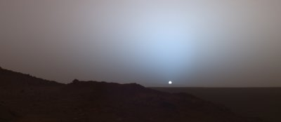
–Bruno Becker, prepárese para descender por favor. –dijo una fuerte y clara voz, despertándolo. Abrió la tapa de la cabina y salió. Fue al baño, donde se cambió la bata descartable por sus propias ropas, luego recogió el bolso de mano y se dirigió a la puerta.
Recordó divertido la cara de la mujer en el espaciopuerto cuando declaró que llevaría solamente un bolso de mano. Es que nadie hace un viaje a la Luna con menos de dos valijas. Es más, ese era el negocio de las empresas de transporte de pasajeros, ya que el boleto básico no era demasiado caro –considerando que era un viaje Marte-Luna–, pero cobraban fortunas por los kilogramos de peso excedente.
El espaciopuerto estaba bastante vacío, la gran ventaja de llegar en horas de la noche. Bajó al subterráneo que conectaba el espaciopuerto con el domo de la ciudad, esperó a que llegase el coche y entró.
«Otra ventaja de llegar cuando todos duermen» pensó mientras se sentaba en un asiento libre. Recordó que en la Luna esto no era un factor, dado que poseían un ritmo de día completo. Como en una fábrica, muchas de las actividades de los habitantes de la Luna se dividían en tres turnos. Esta fue una grata sorpresa: cuando averiguó en que horario podía hacerse los análisis, le dieron turno para esa misma noche.
Sonrió ante el recuerdo de cuando en el hospital le dieron la buena noticia de que no tendría enfermedades importantes en los próximos veinte años. Este tipo de estudio genético era reciente y no se había difundido todavía. Aunque no era caro, se realizaba solamente en el Hospital Central de la Luna. Para Bruno esto no fue un problema, pues se tomó una semana de vacaciones allí y visitó a su hermano.
Un parpadeo de las luces del vagón lo hizo volver a la realidad. El tren había comenzado a moverse, aunque no tomó velocidad hasta que salió del espaciopuerto, luego de hacer dos paradas más. En menos de media hora Bruno estaba bajándose en la Estación Plaza Central, desde dónde tenía solamente una corta caminata hasta su departamento.
Realmente había extrañado ese lugar. Aunque no hacía mucho tiempo que vivía en Marte, se había acostumbrado rápidamente a su estilo de vida. Y había encajado perfectamente en el tipo de ciudad. Casas, edificios de departamentos de no más de tres pisos. Plazas cuidadas, calles limpias. Verdaderamente era un lugar de ensueño. Debía serlo para que acostumbrarse a vivir en otro planeta no fuese sicológicamente peligroso para los inmigrantes. Para Bruno esto nunca fue un inconveniente.
Aprovechaba y disfrutaba sus espacios, su aire artificialmente puro, los paisajes que se dejaban ver a través de la parte baja de la cúpula, dónde se podía apreciar a lo lejos una hermosa combinación de picos y valles. Pero a él le gustaba apreciar otro tipo de paisaje. Miró el cielo a través de los sectores transparentes de la cúpula. Era una noche hermosa, ya estaba amaneciendo.
«Siempre está despejado –se dijo a sí mismo, contento–, no hay suficiente atmósfera para que haya nubes»
Buscó a Fobos, pero no lo encontró. Caminaba concentrado, pensando en lo difícil que era conseguir en la Tierra una noche límpida y cristalina como esa cuando, luego de entrar al edificio donde vivía, llegó a la puerta de su departamento. Lo que vio lo dejó helado. Escrita con aerosol, en letras negras grandes y brillantes –la pintura aún estaba fresca–, había una palabra atravesando la puerta:
Durante un segundo se enfureció, ¿quién había ensuciado su puerta? Pero su enojo dejó paso al terror cuando la parte consciente de su cerebro recordó. Por su mente se sucedieron imágenes de noticieros y artículos de periódicos. Y entendió el mensaje allí escrito.
En Marte no hay muchos delitos, los dificultan principalmente la baja población y el control de la policía. Entre ellos el asesinato es el menos común. Pero de algunos meses hasta ahora la cantidad de homicidios se había disparado asombrosamente: el total en este último período había duplicado a todo el resto de la historia de Marte. Y estos últimos asesinatos eran precedidos siempre por la misma amenaza. Más que una amenaza era una marca letal: la víctima encontraba siempre alguna pertenencia marcada con la palabra CER0.
Sin poder despegar la vista de la puerta, comenzó a retroceder. Trastabilló en el comienzo de la escalera, y casi se cae de espaldas, pero se sostuvo justo a tiempo del pasamanos. Giró y bajó los dos pisos en una exhalación, casi deslizándose por sobre los escalones.
Cuando ganó la calle, no sabía que hacer. Escapar, ¿de quién? Esconderse, ¿en dónde? Notó que estaba caminando demasiado rápido, llevándose gente por delante. Luchó por calmarse un poco, no le convenía llamar la atención. Estaba a menos de dos cuadras de Plaza Central, pensó que era mejor llegar allí.
Se dio cuenta demasiado tarde de que no tendría que haber intentado ahorrar camino por un atajo, que debía haberse mantenido a la vista de la gente. Sintió alguien detrás, pero fue demasiado tarde, un fuerte brazo lo agarró del cuello y lo último que sintió antes de desmayarse fue el fuerte olor a éter del paño que le pusieron en la cara.
02. Identidad
Cuando despertó le dolía tremendamente la espalda. Yacía acostado, semidesnudo, en una especie de camilla. Estaba en un lugar limpio, aséptico, olía como un hospital. Aunque pensó que había abierto los ojos, aún tenía los párpados cerrados, y sólo veía manchones de luz. Segundos después pudo finalmente abrirlos viendo una potente luz sobre él.
A su alrededor había demasiados cromados como para ser un hospital. Se sentó en la camilla, la cual no era sino una plancha de acero inoxidable. Comenzó a registrar con la vista la habitación. Buenas luces, grandes casilleros cubriendo una pared. Frente a él, una camilla similar a la que estaba él, y más allá, junto a la camilla, una mesita con instrumentos de cirugía. ¡Estaba en una morgue, sobre una mesa de autopsias! Se dio vuelta asustado, para ver la mesita que correspondía a su camilla y allí estaba el resto de su ropa, prolijamente doblada.
Eso lo desconcertó. Bajó las piernas y se quedó mirando la pila de prendas. La recorrió con la mano separándolas apenas una de otra. Efectivamente era su ropa. Parecía recién lavada. Volvió a recorrer la habitación con la vista hasta que se convenció de que no corría peligro alguno. La sospecha de haberse despertado antes de que vinieran a descuartizarlo desapareció de su mente.
Bajó de la mesa de acero inoxidable y comenzó a vestirse. La ropa olía muy bien, efectivamente estaba recién lavada y había sido doblada sobre la mesita con esmero. Se convenció de que no corría ningún peligro, incluso antes de terminar de vestirse. El miedo inicial había desaparecido y sólo tenía curiosidad. Decidido a pedir razones, abandonó la habitación.
Estaba en un pasillo, donde se veía una flecha que indicaba la salida apuntando hacia la izquierda, pero Bruno no quería irse sin encontrar a la persona que lo había traído hasta allí. En el silencio sepulcral que reinaba, escuchó muy tenue a lo lejos una voz que provenía de alguna terminal, dando las noticias del día.
Fue hacia la derecha, desde donde provenía el sonido. Llegó al final del pasillo, a la izquierda había una planta, a la derecha un par de puertas batientes. Dudando en si debía llamar o entrar directamente, abrió lentamente una de las puertas. Como no vio a nadie entró, y luego de salvar un pequeño hall, desembocó en una cocina donde había un hombre sirviendo café.
–Bruno Becker, despertaste –dijo con una amplia sonrisa–. No iba a dejarte mucho tiempo más durmiendo, la mesa de autopsias no es exactamente un colchón de lujo, aunque debe ser más limpio que el piso. ¡Pero debes estar hambriento!
Bruno lo miraba, desconcertado.
–Sentate, no te quedés ahí parado como un tonto. ¿Café? Té no tengo. Hay jugo de naranja, artificial por supuesto, no podemos darnos esos lujos, ¿eh?– le dijo mientras guiñaba un ojo.
Bruno se sentó, perplejo. El hombre se sentó a su lado, y empezó a engullir unas tostadas con el café.
–¿Querés tostadas? Son de pan fresco, pero no tengo nada para ponerles encima.
Dijo esto último mientras servía café en otra taza y la ponía delante de su invitado, aunque este no había aceptado ninguna de sus ofertas.
Bruno comenzó a comer una tostada y probó el café. ¡Realmente estaba hambriento! Lo terminó de tres largos sorbos y se sirvió nuevamente. No recordaba que unas tostadas secas le resultaran tan ricas en otra oportunidad.
–¿Cuánto tiempo dormí? –preguntó.
–¡Siete horas! ¡O me pasé con el éter o hace rato que no te echabas una siestecita! –exclamó el hombre con una carcajada.
«Siete horas –pensó Bruno–, con razón me duele la espalda.»
–¿Quién sos? –preguntó Bruno, consciente de que debería haber comenzado por allí, incluso antes de sentarse y desayunar. «Fui demasiado confiado –pensó–, es que parece buen tipo». Trató de justificarse a sí mismo, ya que siempre había confiado en sus primeras impresiones.
–Me llamo Fabián Di Francesco, pertenezco a una organización muy poco conocida, aunque desearíamos que no la conociera absolutamente nadie –comenzó el hombre mientras terminaba su café. Se recostó en su silla, haciéndola crujir mientras se balanceaba sobre las dos patas traseras y dudaba como encarar la explicación.
–Mi función es básicamente buscar determinadas personas. Si las encuentro les ofrezco entrar en el círculo. Lamentablemente, hay gente que quiere destruir esta organización, eliminando a sus integrantes –continuó Di Francesco, evitando la mirada de su interlocutor–. Se nos está filtrando demasiada información. Cuando fui a buscarte a tu departamento y vi la amenaza en la puerta, supe que sabían que te buscaríamos y te habían marcado. Es por eso que te traje aquí, donde estarás seguro.
–¿Pero por qué quieren matarme si todavía no entré en esta organización que vos mencionás? –preguntó Bruno. No tenía motivos para confiar en esa persona, sin embargo le creía–. ¿Y por qué me dormiste para traerme hasta acá?
–¡¿Y de qué otra manera?! Después de recibir una amenaza de muerte no ibas a acompañarme, un completo desconocido, ¡a una morgue! –dijo exasperado Di Francesco, moviendo exageradamente los brazos.
–No contestaste mi pregunta.
Di Francesco sonrió y se mantuvo callado unos instantes. Como Bruno no cedía, continuó.
–Es que sabían que ibas a entrar a la organización. Si se había filtrado quién eras, seguramente se habían enterado qué eras.
Bruno, para su propia sorpresa, no se ofendió por las palabras de su anfitrión. –¿A que te referís con lo que soy?
Di Francesco suspiró. –Te va a costar creer todo lo que te voy a decir, pero debés dejarme terminar de hablar y explicarte el panorama entero.
Bruno se acomodó en su silla, dispuesto a escuchar.
–Imaginate Marte hace ochocientos mil años. Pero no te lo imagines como ahora, seco, sino con agua. Ríos, incluso mares. La atmósfera mucho más densa, con nubes y lluvias que alimentaban el ciclo completo de la vida. Vegetales, animales, y hasta vida inteligente. Una raza de marcianos.
–¿Marcianos?
–Dejame terminar. Esta raza, desarrollada tecnológicamente, debió afrontar un gravísimo problema. No sabemos aún por qué, pero comenzó a escasear el agua, tan necesaria para la vida en Marte como en nuestra Tierra. Ante tal catástrofe, esta raza, conocedora de que en su planeta vecino hay vida en abundancia y un ecosistema equilibrado, decide continuar allí con su supervivencia.
–Y se mudaron...
–No –interrumpió Di Francesco–. No podían usar la Tierra directamente, no sabemos todavía bien por qué. Suponemos que por la mayor radiación ultravioleta, aunque a algunos les parece más probable que haya sido por la gravedad.
–Claro, es más de tres veces mayor
–La cuestión es que ante esta imposibilidad, deciden realizar un experimento genético a gran escala con nuestros antepasados. Modificaron cuidadosamente genes del ADN del homo erectus para que con el transcurrir de miles de años y billones de cruces y mutaciones, estos cambios influyeran en la evolución de sus experimentos.
–O sea nosotros. ¿Y cómo saben todo esto?
–Es lo que más o menos pudimos inferir de los grabados que encontramos en cavernas de Marte. Estuvimos años tratando de descifrar el lenguaje de estas marcas, y hasta donde llegamos nos arman esta historia que es bastante coherente.
Bruno no creía completamente la historia, pero sentía curiosidad científica por ella.
–¿Grabados en cavernas de Marte?
–Mejor dicho, grabados en caverna, singular –corrigió Di Francesco–. En las excavaciones de la mina principal de hielo del planeta, al norte del espaciopuerto, se encontró hace varios años una caverna cuyas paredes estaban llenas de grabados. Estudios de antigüedad nos llevaron a determinar que tenían como mínimo quinientos mil años. Se abocaron los mejores lingüistas para descifrar el lenguaje, y están bastante avanzados en el tema.
–¿Quiénes descubrieron esto?
–Lamentablemente no te puedo decir quiénes lo descubrieron, porque necesito proteger a los miembros de la Organización.
–¿Pero cómo es que nunca salió a la luz pública?
–Todo este tema siempre se mantuvo oculto para no desatar una caza de brujas a escala mundial, debido a que, por el azar de las combinaciones genéticas de nuestros antepasados, algunos de nosotros poseemos más completa una secuencia de genes que el resto de los seres humanos.
–¿Secuencia de genes?
–Hemos descubierto que la mayoría de nosotros poseemos una secuencia clave de genes en un porcentaje anormal para el resto de los seres humanos.
–¿A que te referís con nosotros? –preguntó Bruno con preocupación.
–A los que somos fuertes descendientes de los experimentos marcianos originales. Nos sorprendió cuando te encontramos, porque nadie de los que habíamos detectado hasta ahora poseía la cadena tan completa. ¡Pero basta de charla! –sentenció Di Francesco viendo que su invitado había acabado su desayuno. –Vamos a mi departamento. Allí te mostraré papeles y documentos que prueban lo que digo.
Salieron a la calle, tomaron un taxi que los llevó a la otra punta de la ciudad. El departamento era en planta baja. Entraron y Di Francesco fue a la cocina.
–Buscaré los papeles. El baño está por allá –señaló respondiendo al pedido de Bruno.
Fue al baño, abstraído en intentar darse cuenta de por qué estaba en el departamento de un extraño, luego de una historia tan inverosímil. Cuando giró para lavarse las manos, vio escrito en el espejo: CER0.
Salió corriendo para la cocina. Gritando. Primero vio a Di Francesco sentado en el piso, con la espalda contra la pared. Al acercarse desesperado, descubrió el agujero en la frente. Un hilo de sangre recorría su cara hasta gotearle del mentón.
Espantado, se quedó rígido sin saber que hacer. Nunca había estado en presencia de un cadáver, y ahora no sabía como reaccionar. Finalmente algo hizo un clic en su cabeza y volvió al baño, tomó una toalla y limpió sus huellas digitales de las cosas que había tocado. Quería desaparecer de ese departamento, pero al mismo tiempo no quería irse sin los documentos.
Volvió a la cocina. Buscó superficialmente, luego con más detalles en cajones y alacenas. Finalmente, con horror, desplazó el cadáver de Di Francesco y encontró el trabajo sin terminar: un panel de la pared a medio retirar.
Terminó de sacar esa tapa, y en el interior encontró solamente una carpeta. Salió del departamento, cuidando de que no lo viera nadie y comenzó a caminar con la carpeta bajo el brazo. Quería alejarse de allí cuanto antes.
Aunque estaba muy asustado, aún no quería ir a la policía, pretendía primero estudiar el contenido de la carpeta. Considerando que no podía volver a su departamento, y que su oficina quizás estaría también vigilada, Bruno decidió registrarse en un hotel.
–Una habitación simple, por favor.
–Como no, señor. Firme aquí por favor –pidió el empleado del hotel señalando un rectángulo en la pantalla donde Bruno debía apoyar el pulgar–. Habitación 225, muchas gracias.
Luego del corto trámite, tomó el ascensor hasta el segundo piso y buscó la entrada que le correspondía. Una vez que trabó la puerta de la habitación y verificó que estuviera bien cerrada, se fue a bañar.
Se quedó bastante tiempo bajo la ducha, disfrutando el agua caliente, tratando de relajarse y a la vez ansioso por comenzar a leer los papeles que había rescatado de la casa de Di Francesco. Lamentaba que haya muerto, parecía un tipo agradable. Pensó también en lo cerca que él mismo estuvo de la muerte. Cerró los ojos y trató de despejar su mente.
Ya seco, aunque sólo vestido con la toalla, distribuyó los documentos de Di Francesco sobre la cama. Había papeles de todo tipo: recortes de diarios, impresos por computadora, manuscritos, y hasta transparencias. La gran mayoría eran estadísticas, hechas en la Tierra, de grupos humanos muy variados. Distintas culturas, distintas razas, distintas edades, distintas clases sociales, distintos tipos de educación. Realmente estaban bien hechas, y por la cantidad de gente que había participado en cada grupo, alguien había gastado mucho dinero en hacerlas.
Todas las estadísticas habían sido orientadas a tratar de probar que las personas poseedoras de una buena parte de la cadena de genes que había mencionado Di Francesco poseían una capacidad intuitiva mayor de lo normal.
En uno de los documentos que resumían las conclusiones de los estudios, explicaba que cuando el sujeto de muestra permanecía despierto, se veía una leve tendencia a mostrar una intuición superior, pero el error considerado no permitía sacar conclusiones valederas. En cambio, cuando al sujeto le era presentado el problema y dormía luego dos o tres horas, se podía afirmar positivamente que había una diferencia en la resolución de ese problema entre una persona común y una con un alto porcentaje de la cadena genética.
En el análisis hecho como resultado de las estadísticas, se destacaba la alta probabilidad de que el examinado soñase las respuestas a los problemas. A Becker le interesó muchísimo esto, por sus propios y nunca explicados sueños recurrentes. Pero lo que mayor agrado le produjo fue encontrar el detalle de la cadena de genes que supuestamente forma parte de la herencia de los experimentos que le contó Di Francesco.
Fue hasta la terminal de la habitación y se puso en contacto con su hermano Adrián, quien trabajaba en la Luna, en los Laboratorios de Análisis Químicos de la empresa Extractora Lunar. No sabía que tipo de experimentos hacía su hermano con el hielo que sacaban de las profundidades lunares, pero sabía que los equipos que poseían eran bastante avanzados.
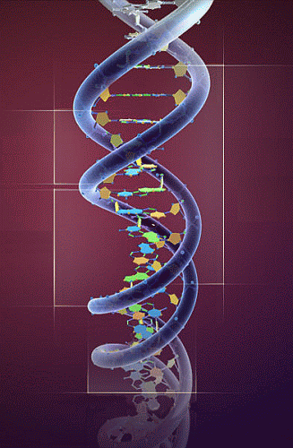
Miró la hora en su reloj. En la Luna recién era media tarde.
–Hola Bruno –atendió Adrián Becker en el videófono de la terminal de uno de los laboratorios donde trabajaba.
–¿Cómo estás?
–Yo bien, extrañado de que vuelvas a llamarme tan pronto. Te fuiste hace una semana, y tomando en cuenta que dormiste como cuatro días... –contestó mordaz Adrián.
–Escuchame, necesito un favor. Te voy a mandar el detalle de una cadena de genes y una muestra de mi sangre. ¿Podrás hacer un análisis de algún tipo y determinar que porcentaje de esta cadena poseo en mi ADN?
Adrián Becker se quedó callado unos segundos, pensando.
–Con los equipos de mi laboratorio no, pero conozco a alguien aquí en la Luna que puede hacer ese tipo de trabajo –respondió.
–¡Gracias! ¿Cómo mando la sangre hasta allá, debe ir refrigerada?
–No, no hace falta. Andá a una farmacia y comprá depósitos de muestras para traslados. Eso sí, mandalo por vuelo expreso, cuanto menor sea el tiempo de viaje mejor. Pero con los químicos que tiene el depósito de muestras no hay problema por dos o tres días.
–Bueno, gracias de nuevo. ¡Ah! No trates de ubicarme, no voy a estar en casa ni en la oficina.
–¿Pero qué carajo pasa? No es un pedido de lo más normal, ¡y encima me decís que no trate de ubicarte! ¿Dónde estás? Por el fondo de la imagen parece un hotel o algo así– dijo Adrián alarmado.
–Nada, no te preocupes. Haceme este favor, yo te llamo en menos de una semana. ¿Puede ser?
–Está bien, pero cuidate. Un abrazo –terminó Adrián todavía preocupado y cortó la comunicación.
Bruno se quedó mirando la pantalla en blanco, sin saber si había hecho bien. No quería meter a su hermano en problemas, pero necesitaba su ayuda. Agarró dos sobres grandes del escritorio de la habitación y puso el detalle de la cadena de genes en uno y el resto de los papeles en otro. Se terminó de vestir y salió de la habitación llevándose ambos sobres.
Fue hasta el Banco con el que trabajaba normalmente y abrió una caja de seguridad. Dejó adentro el sobre con todos los documentos y dio órdenes expresas de que solamente él o su hermano podían abrir la caja. Estaba seguro de que era la mejor manera de hacerle llegar los papeles a Adrián si a él le sucedía algo.
Luego buscó una farmacia, donde consiguió el material que le había indicado su hermano. No era más que una caja hermética que contenía dos plaquitas de vidrio con algún tipo de gel entre ellas. En la caja indicaba que la sangre humana se mantenía intacta aún después de siete días, si la temperatura no superaba los cincuenta grados centígrados.
En el camino a la Oficina de Correos pasó por una tienda donde compró algunas mudas de ropa, indispensables para no tener que volver a su casa a cambiarse. Cuando llegó a la Oficina de Correos entró directamente al baño. Allí sacó su navaja y se pinchó un dedo, dejando caer tres gotas de sangre sobre el gel. Juntó los cristales y los colocó dentro de la caja, cerrándola herméticamente y poniéndola a su vez dentro del sobre de papel junto al detalle genético. Luego fue al mostrador y despachó el sobre a la dirección de su hermano, indicando que la entrega debía hacerse fuera del horario laboral.
Salió del local pensando en comprar comida para llevar e irse a su oficina. Había desayunado muy temprano, en el hotel no había comido nada y ya eran casi las siete de la tarde. Sin embargo, sintiéndose cansado, luego de comprar comida decidió ir al hotel. No fue directamente, hizo una parada en una plaza para merendar al aire libre.
Cuando salió de la Oficina de Correos, un hombre comenzó a seguirlo.
Había llegado a la oficina en el momento en que Bruno salía del baño y se había quedado esperándolo.
Se mantuvo a una distancia prudente cuando se detuvo a comprar comida, y tuvo que disimular en una esquina por más de una hora mientras comía en Plaza Central. Pero finalmente tuvo su recompensa cuando vio que Bruno entraba en un hotel.
«Te tengo» pensó.
03. Avisos
Bruno no se dio cuenta lo cansado que estaba hasta que se acostó. Había decidido ir a la mina a la mañana siguiente, por lo que llamó a su secretaria para avisar que estaba bien y que iría al otro día. No acostumbraba a justificar sus ausencias o sus tardanzas, pero no quería que se asustaran, ya que él debería haber vuelto a trabajar de las vacaciones el día anterior.
A la mañana siguiente, se levantó, se bañó, y cuando se estaba secando, llegó un mensaje de conserjería indicando que había alguien esperándolo en la recepción del hotel. Bruno activó el videófono y le indicó al conserje que le pidiera una identificación al visitante, que tomara sus datos, y que le dijera que esperara unos veinte minutos, que él bajaría.
«¿Quién podía ser? ¿Alguien de la oficina?» bajó preguntándose. Cuando llegó a la boca de las escaleras, se quedó unos instantes observando, tratando de adivinar quien era su visita. En el hall del hotel no había nadie que él haya visto antes.
Cuatro mujeres, hermanas por lo similar de sus facciones, desayunaban en una mesa junto a un ventanal que daba a la calle. Dos hombres parecían hablar de negocios en un sillón. Una mujer hablaba por videófono. Al fondo del salón, un hombre sólo, en actitud de espera.

Bruno lo observó unos minutos, hasta que se convenció de que nunca lo había visto antes. Si esa era su visita, recibiría a un completo extraño. Se acercó al conserje, quien le mostró que justamente esa era la persona que lo esperaba. Se dirigió al hombre, quien se enderezó para recibirlo y le estrechó la mano.
Estaba decidido a no arriesgarse a ir a un lugar poco concurrido, por lo que ante la invitación del hombre para ir a conversar al bar del hotel, le dijo que prefería desayunar en la recepción. Se sentaron en la mesa contigua a la de las cuatro mujeres, dónde el extraño tomó enseguida las riendas de la conversación.
–Antes que nada quisiera presentarme –comenzó–, mi nombre es Darío Ganduxer y trabajo para la Organización en reemplazo del señor Di Francesco. Sé que habrá lamentado tanto como nosotros la suerte corrida por nuestro compañero.
–Encantado. Con respecto a Di Francesco, no llegué a conocerlo muy bien, pero parecía una buena persona –contestó Bruno, y se quedó en silencio a propósito para que Ganduxer continuara.
–Como le decía, la Organización me dio la tarea de ser su guía en la búsqueda que emprendimos. Esta asignación incluye buenos viáticos, así que invito yo. ¿Qué desea desayunar? –ofreció Ganduxer.
Llamaron al mozo y ordenaron café para los dos. Bruno pidió también una porción de tarta de manzanas. Se quedaron en silencio hasta que les trajeron lo pedido. Una vez el mozo terminó de servir la mesa, Bruno continuó con la conversación.
–Mi problema es que Di Francesco en ningún momento me indicó exactamente que era lo que tenían en mente. ¿De que se trata esta búsqueda? ¿Y por qué suponen que yo los puedo ayudar? –dijo mientras probaba el café.
–Espero perdonará que no pueda contestarle ampliamente todas sus preguntas. Ultimamente hemos tenido demasiados problemas de seguridad, y estamos tratando de evitar más accidentes –se disculpó Ganduxer.
–Está bien, pero no me gusta. ¿Por qué razón tengo yo que ayudarlos? ¿Qué gano yo con todo esto? –apuró Bruno.
Por la cara de Ganduxer cruzó una sombra de desconcierto, pero la borró tan rápidamente que no creía que se hubiese notado.
–Ya lo sabrá a su momento –justificó Ganduxer mientras dejaba la taza de café en la mesa–. Por lo pronto lo cuidaremos para que los asesinos que lo marcaron no lo encuentren.
Bruno tuvo el impulso de preguntar de cuales asesinos hablaba, pero sabía que el otro no le daría esa información.
–Pero si no sé qué parte tengo en todo esto, jamás podré ayudarlos.
–No sea impaciente –lo retó Ganduxer con una sonrisa–. Tiempo al tiempo.
–Ahora debo irme –continuó diciendo al tiempo que se paraba–. Le dejo estos papeles para que vaya estudiando, y hoy a última hora o mañana me pondré en contacto con usted.
Se despidieron y Bruno subió a su habitación luego de terminar su desayuno. Debía ir a la policía a hacer la denuncia por la amenaza de muerte, ya había pasado más de un día y no quería dejar pasar dos. Sin embargo tenía un par de horas y pensaba dedicárselas a estudiar los documentos que le trajo Ganduxer.
Abrió el sobre y encontró casi una docena de fotos y una carpeta. Las fotos eran de varias placas de superficie pulida sobresaliendo de la piedra, con signos en bajorrelieve. Prestando mayor atención, Bruno se dio cuenta que no eran placas, sino la misma piedra que estaba pulida en un sector rectangular. Los signos grabados dentro de ese marco, que por la escala indicada eran de unos cuatro centímetros de altura, eran rectos y secos, sin ninguna curva, aunque las líneas se entrecruzaban en ángulos variados.
En ningún lado del sobre se explicaba dónde fueron tomadas esas fotografías, aunque para un experto como Bruno era evidente que se trataba de lava volcánica. Estuvo observando las fotos un buen rato, y aunque por supuesto no las entendió en lo más mínimo, le parecía que trasmitían fuerza, como que eran algún tipo de indicaciones u órdenes. O incluso un aviso.
La carpeta contenía tres documentos, dos de particulares y uno de una Universidad de la Tierra. Estos estudios intentaban explicar las fotos, pero no llegaban a ninguna conclusión.
El documento presentado por la Universidad terrestre desperdiciaba hojas intentando comparar los signos con formas de escritura usadas en la Tierra en el pasado, sin lograr ningún resultado. Tomó el primer estudio hecho por un particular: el Jefe de Lingüistas de no sé que Instituto, puro título. Eran dieciocho páginas de puro verso. Muchas palabras para no decir nada.
El último documento, en cambio, era de solamente dos páginas y media. En este caso, en lugar de hacer un análisis tecnificado de las formas y la cultura según el ángulo de corte– a Bruno esto le parecía pura sanata– intentaba aproximarse al significado global del mensaje a través de las sensaciones que transmitía. Este estudio, si bien era el más corto y el que menos conclusiones intentaba afirmar, fue el que más le gustó.
04. Veracidad
–Buenas tardes.
–Buenas tardes, ¿en qué puedo ayudarlo?
–Vengo a denunciar una amenaza de muerte –dijo tranquilo Bruno.
El oficial de policía, poco acostumbrado a ese tipo de trámites, lo miró extrañado–. Sígame por favor.
Bruno acompañó al oficial a una habitación donde había solamente una mesa y varias sillas. Vio por la ventana como el oficial que lo había atendido se acercó a una persona de civil que estaba trabajando en un escritorio y le dijo unas palabras. Este abandonó lo que estaba haciendo y entró a la habitación.
–Buenas tardes, soy el Inspector Johansen –se presentó.
–Bruno Becker –le contestó mientras le estrechaba la mano.
–Soy el oficial a cargo de la investigación de los asesinatos –explicó el policía–. Explíqueme por favor lo sucedido.
Bruno contó que se había ido de vacaciones, y que al volver encontró la amenaza de muerte en su puerta, que desde ese momento había estado en un hotel, y que no había entrado a su casa ni a su oficina desde ese momento. No dijo palabra sobre Di Francesco, sobre Ganduxer, ni sobre esa retahíla de documentos y papeles raros que formaban parte de sus últimos días.
Le tomaron la denuncia completa y le pidieron que los acompañara a su domicilio para sacar fotografías de la amenaza y buscar huellas digitales. Fueron en un auto patrulla, él y dos oficiales. Llegaron al edificio y subieron los dos pisos.
Para sorpresa de Bruno, ¡la puerta estaba limpia!
Ambos policías miraron con desconfianza a Bruno, que no podía creer lo que estaba pasando. ¿Quién había limpiado su puerta? El estaba seguro de haber visto la amenaza, pero la verdad es que había estado sólo algunos instantes junto a la puerta marcada. ¿Y si había sido una alucinación? No lo creía, seguramente habría algún testigo, y la amenaza explicaba la actitud de Di Francesco. Tampoco sabía cuanto tiempo había estado la puerta pintarrajeada, desde que la marcaron hasta que la limpiaron, si es que algo de todo eso verdaderamente había sucedido.
«Será mejor no ponerme a buscar testigos y mantener las aguas lo más calmas posibles. Aquí hay algo demasiado raro», pensó Bruno.
Todo esto se sucedió en su mente en menos de cinco segundos. La cabeza le daba vueltas y no sabía como reaccionar. Estaba muy confundido, sólo esperaba que la policía no lo tomara por loco. Los oficiales le pidieron las llaves y abrieron la puerta con cautela. Nada sucedió y entraron sin ningún problema. Adentro estaba todo normal, tranquilo, tal cual lo había dejado Bruno antes de salir de vacaciones.
Los policías registraron la casa, labraron un acta, y se dispusieron a irse. El se fue con ellos. Cerró la puerta con llave mientras los policías bajaban la escalera y los siguió. Estaba malditamente convencido de que había visto la amenaza y no se sentía seguro estando solo en su departamento. No después de lo de Fabián Di Francesco.
Cuando llegó al hotel, controló si tenía algún mensaje de Ganduxer. Ninguno.
No confiaba mucho en ese tipo, tenía algo indefinido que no lo hacía creer completamente en él. Pero el caos que había vivido estos dos o tres últimos días quizás había trastocado ese don natural que Bruno creía que tenía, de poder deducir el tipo de persona con la primera impresión.
Era verdad, el mismo se justificaba, que no había sido una semana típica. No estaba viviendo en su departamento, no estaba yendo a trabajar, estaba amenazado de muerte y era la pieza principal en no sabía que búsqueda de no sabía qué, relacionada con la posible existencia de una raza marciana de tiempos inmemoriales. Necesitaba una punta para comenzar a reordenar su vida.
Se despertó pasado el medio día. Cuando miró la hora se sorprendió. El no acostumbraba a dormir más de seis o siete horas por noche, ¡y ahora estaba durmiendo un promedio de trece! Pensó que podía ser una manera de liberar los nervios producidos por la aventura en la que estaba inmerso y se despreocupó. Lamentaba no poder recordar lo que soñaba. La última vez que tuvo el sueño recurrente fue en el viaje de llegada a Marte.
«Ojalá pudiera continuarlo para descubrir a donde me lleva» pensó mientras entraba a bañarse.
Pidió que le subieran el desayuno, aunque por la hora que se había hecho bien podía haber sido el almuerzo. Cuando se lo trajeron, ya había comenzado a trabajar con la terminal de la habitación. Comenzó buscando referencias a los grabados marcianos, pero no encontró nada, aunque siguió buscando largo rato después de terminar su desayuno. Todo el asunto, si es que era verdad, se había mantenido perfectamente en secreto.
Para verificar la veracidad de los documentos, se le ocurrió buscar por los autores. De la Universidad obtuvo solamente el dato de que esta tenía un Departamento de Lingüística, aunque le pareció interesante que dicho departamento estaba auspiciado por –forma elegante de las Universidades para decir que parte de los fondos provenían de– la empresa principal de transportes Luna-Marte. Observó interesado que esta empresa y la Excavadora Marte formaban parte de la misma Corporación
Comenzó con el segundo documento. Del autor no consiguió nada, y del Instituto del cual esta persona era Jefe de Lingüistas, sólo un sitio institucional, nada de información útil. Del tercer autor, el que realmente interesaba a Bruno, no encontró casi nada, solamente un obituario de una revista de ciencias que contaba que Félix Carabajal había desaparecido en Marte en una de sus búsquedas habituales. Hablaba muy bien de él y nombraba al pasar que tenía una hija que había seguido sus pasos en la ciencia de la lingüística.
Bruno pensó que la hija de Félix Carabajal podía ayudarlo con la búsqueda de información relacionada con las fotos e intentó buscar su dirección de correo. Lo que encontró lo sorprendió: Roxana Carabajal vivía en Marte. Enviada por una Universidad terrestre para realizar investigaciones, poseía un departamento en el Domo principal.
Dejó de buscar cuando fue interrumpido por el videófono: era el conserje avisándole que Ganduxer había llegado. No le molestaba la interrupción, estaba satisfecho con los resultados de la búsqueda, aunque no le comentaría nada a Ganduxer para ver si podía sonsacarle lo que él sabía.
Ni bien lo vio, Ganduxer fue directamente al grano, casi sin saludar.
–Hola, ¿revisaste los documentos? –le preguntó.
–Buen día –respondió Bruno–. Sí, pero no saqué mucho en claro. Son interesantes pero no sé si verídicos. ¿De dónde salieron estos papeles?
–No puedo decirte eso –contestó Ganduxer sin perder la sonrisa–. Pero puedo mostrarte algo que te va a hacer caer de espalda. ¡Vamos!
–¿A dónde?
–Es una sorpresa, confiá en mí.
Bruno dudó unos segundos. No confiaba, pero no quería que el otro lo notase. –Voy a buscar un abrigo –dijo.
–No hace falta –aseguró Ganduxer comenzando a caminar hacia la puerta–. Volveremos antes del anochecer.
Salieron del hotel y caminaron hasta la boca del subterráneo. Tomaron el tren que llevaba a la mina principal. Durante el viaje, Ganduxer trató de obtener información de Bruno, pero este contestaba con evasivas, y a su vez realizaba preguntas que el otro decía no poder contestar. Poca información pudo sacar de Ganduxer, pero estaba contento de no haberle dado absolutamente ningún dato: todavía no confiaba en ese extraño personaje. Por ese motivo no quería estar sólo con él sin que nadie supiese su paradero.
–Necesito pasar a buscar algo por mi oficina –dijo Bruno–. No nos tendremos que desviar mucho. Por aquí.
En lugar de tomar el ascensor como quería Ganduxer para descender al tercer subsuelo, bajaron por las escaleras un piso, ya que las oficinas estaban justo debajo del nivel del tren subterráneo.
–Esperame acá un minuto –dijo Bruno dejando a Ganduxer en un hall de espera y se metió en su oficina. Su secretaria se sorprendió al verlo, pero Bruno no le dio ni tiempo de reaccionar. –Voy a entrar a la mina con una persona llamada Darío Ganduxer. Lo más probable es que cuando salga no vuelva a pasar por acá, pero si no te llamo antes de las nueve de la noche, te pido por favor que vayas a la policía.
Apurado, dio media vuelta y comenzó a caminar en dirección de la puerta, dejando a su secretaria con una protesta en la boca. Pero antes de comenzar a abrirla se arrepintió, volvió y escribió con detalle la descripción física de Ganduxer. –Para la policía, por si acaso. ¡Chau!
Ahora sí salió y junto a Ganduxer fueron a los guardarropas. Bruno usó el traje de su propiedad, que ya estaba equipado con las herramientas que siempre utilizaba, y Ganduxer tomó uno de los públicos. Prácticamente no dijeron nada hasta que salieron de la cámara de descompresión.
–¿Es muy lejos? Porque puedo usar uno de esos vehículos –dijo Bruno señalando tres automóviles estacionados. Eran muy parecidos a los boogies de superficie, sólo que al no tener cabina para mantener la atmósfera y al poseer ruedas más chicas, mostraban una pequeña superficie de carga.
–Sí, vamos a necesitar uno de estos –afirmó Ganduxer acercándose a la zona de estacionamiento–. No vamos a recorrer una gran distancia, pero podemos aprovechar el malacate que tienen.
Subieron a uno de los coches. Luego de una identificación verbal por parte de Bruno, el vehículo se encendió y Ganduxer lo condujo directamente a la rampa de bajada, por la cual descendió dos niveles y tomó el túnel para ir al lado norte de la mina. Se detuvo en varias oportunidades para consultar el mapa que mostraba el tablero del vehículo, dónde se veía la posición del mismo en los túneles de la mina. Ganduxer maniobraba con seguridad, aunque parecía faltarle un punto de referencia.
Cuando en el mapa apareció un desfiladero, a Ganduxer se le notó el cambio de actitud y con prestancia condujo hasta que llegaron al final del túnel. Salieron del mismo y estacionaron el vehículo.
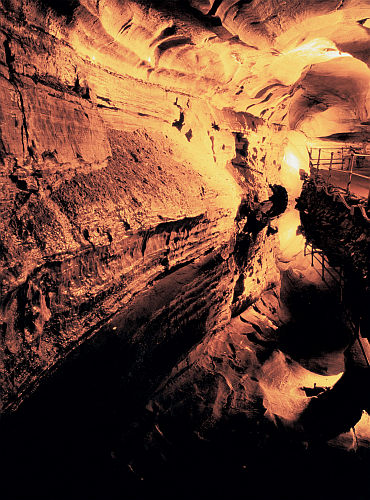
El borde del precipicio estaba a unos cinco metros, pero a ambos les pareció prudente dejar el vehículo lejos. Bruno dudaba de llamarlo precipicio, porque parecía tener una profundidad de menos de cien metros. No pudo determinar su origen, ya que era una formación muy atípica.
Era como una hendidura de menos de cincuenta metros de ancho. Del otro lado, la roca de la pared no sugería un desplazamiento de tierras, aunque pensaba que debería hacer un análisis más detallado para poder asegurarlo. Miraba extrañado el desfiladero, ya que le resultaba familiar. Como parte de su trabajo allí, había estado muchas veces en las profundidades de la mina, pero no recordaba un precipicio tan angosto.
Lo que no tenía de ancho lo tenía de largo. El precipicio continuaba hasta donde se perdía la luz del vehículo. Su primera impresión fue que el desfiladero donde desembocaba el túnel era artificial, pero recorriendo unos metros y observando como se fundía con la pared, llegó a la conclusión de que era natural.
Cuando volvió al vehículo vio que Ganduxer estaba junto al malacate y ya había enganchado su traje. Bruno enganchó el mosquetón en el suyo y a una orden verbal el malacate comenzó a desenrollar el cable de acero.
–Bien, todo probado –dijo Ganduxer–. Vamos a bajar por el borde del precipicio unos cinco metros que allá está lo que te quiero mostrar.
Bruno nunca había bajado colgando por la pared de un precipicio, y se atolondró cuando, habiendo descendido la distancia pedida al malacate, no llegaban a sujetarse de la pared. Ganduxer sin embargo, controlaba sin problemas la posición de ambos a través de movimientos de su cuerpo.
Titubeó unos segundos y encontró lo que buscaba un poco a la derecha del punto donde habían bajado. Movió el haz de luz en esa dirección y Bruno pudo ver una de las placas con grabados que formaba parte de las fotografías que había estado revisando el día anterior.
Se balancearon paralelos a la pared, Ganduxer se sujetó de un saliente de roca y Bruno quedó justo frente a la placa. Sacó de su traje un recipiente con varias divisiones y un raspador, y guardó algunas pequeñas astillas de piedra de la superficie pulida, del fondo del corte del grabado, y de la roca de alrededor de la placa. Aseguró con cuidado el envase dentro de su traje, y le dijo a Ganduxer que ya podían regresar.
Ganduxer le indicó al malacate que los suba y salieron sin mayor problema.
–Te avisé que te gustaría. ¿No es fabuloso? ¿Habías visto alguna vez algo así? –preguntó Ganduxer en el camino de regreso.
Bruno no contestó. Estaba tan concentrado que ni oyó la pregunta. ¿Realmente todo esto era cierto? No confiaba en Ganduxer, aunque la placa parecía bastante real. Después de todo, Di Francesco era quien le había contado la parte más inverosímil, y parecía una buena persona. Además había algo raro en ese precipicio, Bruno no podía entender por qué, ni recordar de dónde, pero sentía que conocía esa zona.
Cuando llegaron a la parte presurizada de la mina, Bruno acompañó a Ganduxer a la estación del subterráneo.
–Yo me quedo acá –le dijo a Ganduxer–. Necesito poner en orden unos documentos en la oficina.
–Bueno –contestó él–. Pero al final no me dijiste nada sobre la placa. ¿Qué te pareció?
–A priori muy interesante –contestó Bruno–. Pero tengo que hacer los análisis sobre las muestras.
–¿Cuándo las tendrás listas?
–No sé. Debo comprobar la disponibilidad de los equipos– mintió Bruno–. Hoy a última hora o mañana estoy volviendo al hotel. ¿Dónde puedo encontrarte?
Ganduxer le dejó el código de su videófono y Bruno se fue, sin siquiera esperar que venga el coche del subterráneo. Era mentira que tenía que terminar un trabajo: en ese momento no había necesidad de diseñar nuevos túneles ya que la veta de hielo que estaban explotando duraría más de dos meses. Solamente quería estar tranquilo y pensar. Durante el viaje desde el precipicio Ganduxer no había parado de hablar, aunque no recibía más respuesta que monosílabos. No quería volver a pasar por lo mismo durante todo el viaje a la ciudad.
Volvió a su oficina. Su secretaria todavía estaba allí y se tranquilizó al verlo. –Ya me estaba yendo –le dijo–. Me alegro de que estés bien.
–¿Cómo anda todo?
–No hay mayor novedad. Llegó el proyecto de Planificación de Excavaciones para el próximo mes. Dicen que cualquier detalle les avises antes de la semana que viene.
–No te preocupes, no hay problema –contestó Bruno y se metió en su oficina. Allí controló su correo. Había recibido uno de su hermano. Lo abrió ansioso y leyó:
Hola. Espero que estés bien. Supongo que mañana me vas a llamar, pero como ya tengo los resultados, decidí adelantarme.
No sé de donde sacaste esa cadena de genes, no la pude encontrar por ningún lado. Mi amigo la trató de ubicar en sus propias bases de datos y encontró que aún no fue clasificada, ya que solamente un ínfimo porcentaje de los seres humanos, prácticamente nulo, posee más del quince por ciento de la cadena completa.
Bueno, la cuestión es que en tu ADN, la cadena está completa en ¡casi el sesenta y cinco por ciento! ¡Realmente asombroso!
Repito, espero que estés bien y ¡llamame mañana!
Un abrazo.
«Realmente hay algo muy extraño en esa cadena genética» pensó Bruno. Se recostó en su sillón y entrecerró los ojos para concentrarse mejor pero se quedó inmediatamente dormido. Sin soñar.
Se despertó pasadas las tres de la madrugada. Por unos segundos se sintió completamente desorientado, luego recordó que estaba en su oficina, en la mina. La espalda le dolía demasiado como para estar sentado en el sillón un minuto más, por lo que se levantó y comenzó a moverse de un lado para el otro para descontracturarse.
Fue a prepararse una taza de café. Su secretaria se había ido en algún momento sin hacer mucho ruido. Recordó que había dejado la caja con las muestras de la placa grabada sobre su escritorio, entonces volvió a buscarla y fue hasta el laboratorio.
Aunque la mayor parte del tiempo estuvo recalibrando los instrumentos para medir sobre piedra y no sobre hielo, obtuvo los resultados en menos de dos horas. Las muestras indicaban que la roca de alrededor de la placa, que teóricamente nunca fue trabajada y se mantenía natural, poseía una antigüedad de más de dos millones de años. En cambio, la zona pulida de la placa, así como el fondo de los cortes, eran de entre seiscientos y ochocientos mil años atrás.
La técnica de medir la antigüedad de un mineral por medio de los esfuerzos de compresión soportados por las capas superiores del suelo contenía muchos errores intrínsecos. Pero aunque la medición era aproximada, le aseguraba que la placa no era algo creado para engañarlo. Era completamente verídica, Y si esa placa pulida y grabada tenía esa antigüedad, ciertamente tornaba verídicas el resto de las explicaciones y teorías que le habían estado contando los últimos días.
Quiso volver a dormir, pero estaba demasiado excitado para lograrlo. Sin embargo lo intentó, y luego de veinte minutos en el sillón de su oficina, decidió que lo mejor era irse para el hotel y no volver a la mañana siguiente. Le dejó una nota a su secretaria diciéndole que la iba a llamar y fue a tomarse el subterráneo.
05. Encrucijada
Roxana Carabajal se despertó sin la ayuda del despertador. Le resultó extraño, normalmente se despertaba recién a la tercer descarga eléctrica de la almohada. Se despabiló instantáneamente. Aprovechando que estaba desnuda, decidió bañarse. Ni bien se paró, la cama se plegó sobre si misma y se guardo en la pared.
Entró en el cilindro semitransparente, se paró con las piernas medio abiertas y levantó los brazos. Inmediatamente surgieron chorros de agua de todas las paredes del duchador. Contó mentalmente: diez segundos de agua a presión, pausa de cinco segundos, agua enjabonada, pausa, agua para enjuagar, pausa, aire caliente para secarse, aire frío para refrigerar.
Salió del duchador como nueva, recordando la cantidad de agua y tiempo que desperdiciaban los habitantes de la Tierra para bañarse, muchas veces sin lograr niveles de limpieza tan altos. Se incluía a ella misma en ese grupo, por supuesto, ya que había vivido en aquel planeta veintidós años antes de venir a Marte. Recordó con una mezcla de nostalgia y alegría esa época. Los años felices en la Universidad, trabajando en el pequeño laboratorio de investigación que dirigía su padre. Verdaderamente había pasado tiempo y sucedido muchas cosas desde aquella época.
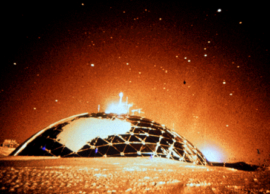
Decidió hacerse el desayuno. Miró el reloj, todavía era de noche. Faltaban aún seis horas para que amaneciera. Era realmente extraño como nunca había podido acostumbrarse al cambio de la duración del día entre la Tierra y Marte. Mientras decidía si tomar un desayuno rico en lácteos o en fibra, se admitió a sí misma que en los primeros meses en Marte le había costado muchísimo más manejar la diferencia de horarios.
No fue así con su padre, quien jamás tuvo ese problema. Al haber viajado tanto durante toda su vida, él había desarrollado la útil capacidad de dormirse y despertarse casi a voluntad. Quizás este acostumbramiento a viajar haya favorecido la decisión que tomó de venir a investigar a Marte cuando un viejo amigo suyo le ofreció la oportunidad.
Volvió a su memoria aquel extraño personaje. Ella lo conocía desde chica, como un amigo de la familia. Pero en estos últimos años habían tenido una interacción más profesional. Aunque era su jefe directo y decidía muchos de sus proyectos de investigación, siempre le daba muchísima libertad. Luego de la desaparición de su padre, también hubo un acercamiento más proteccionista. Recordaba que hace muchos años su padre y esta persona habían trabajado juntos, pero luego este último había fundado una de las primeras empresas en Marte, dejándolo sólo en el Laboratorio. Igualmente había ayudado mucho a su padre en sus últimos días.
Intentó liberar su mente de recuerdos dolorosos y encendió la agenda del escritorio. Esta le comunicó que tenía una cita allí mismo, en su casa/estudio, a las ocho en punto. Recordó el llamado del día anterior, de una persona que ella no conocía, aunque dijo que tenía información que la podía ayudar en su actual investigación. Le pareció extraño que haya querido ir tan temprano, pero ella no tuvo objeciones.
Decidió qué ropas ponerse mientras terminaba su desayuno. Pantalones, camisa y zapatos le parecieron lo más adecuado, ya que en la tarde quería ir a recorrer unas instalaciones fuera del domo. Se vistió y luego se puso a trabajar en un informe que tenía pendiente.
Cuando Bruno estaba llegando al hotel se dio cuenta que había perdido el sueño. Ya había amanecido y sabía que si iba a su habitación a acostarse, tampoco lograría dormirse, por lo que decidió ir a comer algo.
Hizo tiempo mientras desayunaba, y cuando terminó ya eran más de las ocho de la mañana, hora decente para ir a buscar a Roxana Carabajal, la hija del autor del documento con el que estaba más de acuerdo de todos los que le había dado Ganduxer.
Llegó a la dirección que había averiguado por la terminal y encontró la fachada de un local comercial, sobrio como la de un estudio de abogados. Llamó a la puerta y esperó. Buscó un cartel con el horario y no encontró ninguno. Esperó. Controló la hora en su reloj, pasadas las nueve. Volvió a llamar a la puerta. Esta vez intentó abrirla y la puerta cedió.
Entró anunciándose en una especie de hall y esperó. Estaba buscando donde sentarse cuando escuchó un grito que lo puso alerta: no era el grito de alguien llamando a otra persona, era un grito de pánico. Instintivamente salió corriendo para el interior de la casa. Pasó una habitación donde no había nadie y escuchó ruidos en la sala contigua. Cuando abrió la puerta para entrar, se le zafó de la mano y golpeó fuertemente contra la pared.
Vio dos personas luchando en el piso, pero el estampido del golpe les llamó la atención y una de ellas logró zafarse y se alejó al otro lado de la habitación. Bruno la siguió con la mirada, era una mujer y no la había visto en su vida, pero cuando ella se sacó el pelo de la cara y se lo echó para atrás, pudo ver en su cara facciones de Félix Carabajal. No cabía duda, esa mujer era Roxana Carabajal, la persona que estaba buscando. Volvió la cabeza para ver quien era el otro luchador y más confuso quedó aún cuando vio que la otra persona, que ya se estaba incorporando, era Darío Ganduxer.
Bruno no sabía que pensar. Miraba de un lado para el otro, primero a Ganduxer, luego a Roxana Carabajal y nuevamente a Ganduxer, pero no podía entender lo que estaba sucediendo
–¿Qué carajo pasa acá?
–¡Qué suerte que llegaste! –dijo Ganduxer que había terminado de pararse–. Encontré a la asesina de Di Francesco, y posiblemente sea la que te amenazó a vos.
–¿A mí? ¿Ella?
Bruno los miraba a ambos, físicamente congelado. No estaba seguro de que lo que decía Ganduxer fuese verdad, pero Carabajal no se defendía. Es más, no abrió la boca para decir nada en ningún momento. Bruno la miró a los ojos: no parecía una criminal.
Intentó hablarle, pero cuando comenzó a hacerlo, la mujer saltó sobre una mesa que la separaba de un mueble y se tiró al piso del otro lado. En el momento de caer la habitación se llenó de un sonido agudo y estridente, un bocinazo que lo hizo arrodillarse tapándose los oídos con las manos y cerrar fuertemente los ojos, en un intento de aliviar su dolor de tímpanos.
De repente, cuando para su mente había pasado una eternidad, pero para su reloj menos de quince segundos, el sonido cesó. Bruno respiró profundo y recién en ese momento, por el dolor en su garganta, notó que había estado gritando como un desaforado. Abrió los ojos e intentó ponerse de pie. Todavía estaba mareado, pero se sostuvo contra la pared y pudo echarle un vistazo a la habitación.
Ganduxer yacía a su lado, por lo visto desmayado. A Roxana Carabajal no la pudo encontrar en la habitación. Todavía sin poder pensar claramente, Bruno quiso irse, salir a la calle. Sin despertar a Ganduxer, caminó para la salida. Estaba terminando de cruzar la habitación que había antes del local cuando vio en el reflejo del vidrio de un mueble que una figura se abalanzaba sobre él.
06. Enigma y recorrido
Sin tiempo a reaccionar, Bruno sintió un golpe en la nuca y un ramalazo de dolor se extendió por su cuerpo. Cayó desplomado y con los ojos cerrados, aunque estaba todavía consciente. Quiso abrir los ojos, pararse, correr, gritar, pero no podía controlar su cuerpo. Intentó tranquilizarse. Notó que alguien lo comenzaba a arrastrar, agarrando varias veces su cabeza para que no golpeara con los desniveles del piso.
Cuando dejaron de moverlo, lo apoyaron contra algo mullido. La curiosidad pudo más que el miedo, y con un esfuerzo de voluntad pudo entreabrir los párpados. Vio como un par de piernas se alejaban de él, y luego el resto del cuerpo entró en su campo visual: era Roxana Carabajal.
Ella fue hasta una puerta abierta, la cerró y trabó. Se dirigió para la izquierda de Bruno, quien para seguirla con la vista tuvo que girar apenas la cabeza. Vio como iba hasta una pileta y se lavaba cuidadosamente las manos. Luego se sentó en un sillón a un par de metros de él, sacó del cajón de una mesita un recolector de muestras idéntico al que él había comprado y una aguja, se pinchó un dedo y dejó caer algunas gotas de sangre sobre el gel de los cristales.
Cerró la caja, se acercó a Bruno, la ubicó en el bolsillo de su camisa junto a algo que no llegó a ver, y cerró cuidadosamente el velcro del bolsillo. Bruno pensaba que no se había dado cuenta de que él estaba consciente, lo que era una ventaja. Carabajal salió de su campo visual, y aunque durante cinco o diez minutos intentó escuchar algún ruido que le indicara donde estaba ella, fue inútil.
Por último se incorporó. El cuerpo le dolía por haber estado en mala posición, pero cuando movió el cuello, el dolor que surgió de la parte superior de su nuca y se difundió hasta la punta de sus dedos, lo obligó a volver a arrodillarse.
Pensó que se desmayaría, pero gradualmente pudo recuperar el control de su cuerpo. Se puso de pie. La puerta que había trabado Carabajal todavía estaba cerrada, y Bruno sabía que ella no había salido por ahí. La única otra salida de la habitación era una ventana que daba a una calle lateral, así que supuso que ese había sido su camino.
Sintiéndose mejor, fue a ver como estaba Ganduxer. Destrabó la puerta y enseguida llegó a la habitación donde sufrió el bocinazo, pero la misma estaba desierta. Se encogió de hombros, lo que le provocó un nuevo dolor en la parte inferior de la nuca. Buscó en el resto de la casa pero no había nadie. Encontró el baño, donde aprovechó para lavarse la sangre seca de la cabeza. Con cuidado, intentando no dejar huellas digitales en las puertas y picaportes, terminó de registrar la casa y se fue. No encontró en ningún lado a ninguno de los dos.
No se acordó del contenido del bolsillo de su camisa hasta que salió de la casa. Lo abrió con cuidado y sacó la caja hermética de muestras y una tarjeta. Giró la caja entre sus dedos e inmediatamente supo que hacer: debía mandarla a su hermano para que analice la sangre de Carabajal. Estaba seguro, aunque no sabía bien como, que Carabajal contenía buena parte de la cadena clave de genes.
Tenía el correo a menos de cinco minutos, por lo que comenzó a caminar en esa dirección. Investigó la tarjeta. De un lado era completamente blanca, pero del otro decía:
CUIDADO
2410–12:30
Las letras y números eran manuscritos, trazados con un marcador grueso, en líneas firmes y seguras. La tarjeta era de plástico fino, el mismo material que las usadas para las tarjetas de presentación. Ciertamente no podía sacar más información de ella que por lo que estaba escrito.
Llegó al correo y despachó la caja. Según la computadora del mostrador, llegaría en dos días y medio a la Luna. Fue también caminando hasta el hotel. Aunque era más del mediodía, y había desayunado muy temprano, no tenía hambre sino un cansancio que se moría. Por lo tanto, llegó al hotel y directamente se tiró arriba de la cama, sin siquiera sacarse la ropa, durmiéndose inmediatamente.
Se despertó casi ocho horas después, ahora sí, con un hambre animal. Se bañó y cambió de ropas, y bajó a cenar al hall del hotel. Buscó una esquina tranquila y ordenó la comida. Mientras esperaba intentó concentrarse y hacer un repaso de lo vivido en los últimos días junto con la información que poseía.
Todo había comenzado con Fabián Di Francesco. O mejor dicho, con la amenaza, ya que teóricamente Di Francesco lo había desmayado para esconderlo. El fue el primero que le habló de esta supuesta Organización. Aunque intuitivamente confiaba en Di Francesco, no tenía pruebas de esa Organización de la que él hablaba. El otro dato que había sacado de Di Francesco era el detalle de la cadena de genes, y estaba probada la veracidad de este punto. Lamentablemente no pudo obtener más información de él.
Al día siguiente del asesinato de Di Francesco, aparece Ganduxer, nuevamente otro completo extraño yendo a él, y hablando también de la Organización. El punto de contacto entre ambas historias es una búsqueda sobre la que nadie le quiso dar información. Aunque Ganduxer todavía no se había ganado su confianza, le había mostrado el grabado en la piedra de la pared del precipicio, y él mismo había comprobado su antigüedad. Tomando esto como justificación de la veracidad de las otras fotos y los documentos, no tenía motivos para desconfiar de toda la información recibida en los últimos días, incluso de la noticia sobre la existencia pasada de una raza extraterrestre.
A través de uno de esos documentos, había llegado a localizar a Roxana Carabajal en Marte. Y en este punto se descompagina toda la historia, ya que Ganduxer y Carabajal estaban peleando, lo que significaría que Carabajal es enemiga de Ganduxer y por lo tanto de él mismo. Pero en ese caso, ¿por qué Carabajal lo desmayó solamente para darle una muestra de su propia sangre y una tarjeta? ¿por qué la tarjeta dice CUIDADO?
¿Cuidado de quién? Al principio pensó en CER0, pero era demasiado obvio. Tenía que ser algo o alguien cercano a él y que poseyera su confianza. ¿Cuidado de Ganduxer? Ya lo podría haber matado mil veces. ¿De ella? ¡Demasiado absurdo!
Bruno no sabía por qué, pero Carabajal le caía bien, aunque lo había golpeado y desmayado. Tampoco se había defendido cuando Ganduxer la acusó de pertenecer a CER0. Quizás estaba demasiado concentrada buscando el contacto de la bocina para poder escapar, aunque cuando la miró directamente a los ojos parecía muy segura de si misma. Por otro lado, ¿por qué le había dado su sangre? Bruno estaba completamente seguro de que era porque ella contenía en su ADN la cadena genética, pero en ese caso ¿cómo sabía ella de estos genes en particular? ¿Y cómo sabía que él tenía la información y los medios para analizar la sangre? Todo sugería que ella también pertenecía a la Organización, ¿pero en bandos opuestos?
Bruno sentía como que su cabeza iba a explotar. Le daban vueltas en su mente todos estos datos e interrogantes, y no podía sacar ninguna conclusión firme.
¡La tarjeta! Seguramente podría deducir algo de información de allí. La sacó de su billetera y la estudió nuevamente. La palabra CUIDADO no tenía demasiado secreto. Pero no había logrado descifrar aún el significado de los números.
Corrió la taza de café y el plato con los restos de la cena, despejó la mesa y colocó la tarjeta frente a él: 2410–12:30.
Supuso que los cuatro últimos dígitos eran una hora. ¿De qué día? ¿De cualquiera, de hoy, de mañana, de ayer? ¿Y los primeros cuatro? ¿Una fecha? ¿24 de Octubre? Pero faltarían siete meses. ¿Qué puede suceder dentro de siete meses, en una hora determinada, previsto con tanta anticipación, y de lo que deba tener cuidado? ¿Y dónde sucedería?
Nuevamente llegaba solamente a preguntas y no a conclusiones, se estaba cansando de intentar resolver este tipo de rompecabezas. ¿Qué actividad común tiene números identificatorios? ¿Vuelos? ¡Eso era! Seguramente era el número de algún vuelo. Tomó la tarjeta, le dijo al mozo que sumara los gastos a la cuenta del hotel y subió a su habitación.
Prendió la terminal, se conectó con el espaciopuerto, y buscó todos los vuelos programados cuya hora de salida o llegada fuesen las 12:30. Dudó unos instantes y cambió ese parámetro indicando al sistema que listara aquellos vuelos cuyos horarios estén entre las 12 y 13 horas. Esperó unos segundos y recibió un listado de más de veinte registros. Lo descartó rápidamente sin siquiera revisarlo, ya que todos los números de vuelo eran de tres dígitos de largo.
«Veinticuatro diez. Dos cuatro uno cero.» repetía mentalmente.
No se le ocurría algo que pudiese coincidir con un número de cuatro dígitos. Decidió salir del hotel para caminar un rato, buscando despejarse. Trató de olvidarse de la búsqueda del número y dejar trabajar su subconsciente. Caminó sin rumbo fijo, disfrutando del aire libre nocturno –si es que puede llamarse libre a la atmósfera artificial del domo–, dejando resbalar la vista por la gente y el verde de los parques iluminados artificialmente.
Al rato de pasear se detuvo en seco. Había visto algo instantes antes que estaba relacionado con el número. Se dio vuelta y comenzó a observar a su alrededor. Se fijó en distintos carteles, hasta que vio lo que había llamado su atención. En la esquina de la plaza había un cartel que rezaba Loswell 701.
¡Eso era! ¡La altura de una calle! ¿Pero cuál? No tenía muchas posibilidades, ya que el domo con calles más largas era el Principal. Los otros no llegaban ni a las diez cuadras de largo.
Buscó un mapa de la ciudad en la plaza, no encontró ninguno. Sin embargo vio una entrada a la estación de subterráneo. Bajó al subte y observó el mapa del domo. Había sólo cuatro avenidas que controlar, el resto de las calles eran demasiado cortas. Con el corazón en la boca fue buscándolas y con decepción notó que ninguna llegaba a esa altura, ya que en la mitad del trayecto, en la plaza principal, cambiaban de nombre y comenzaba la numeración nuevamente.
«¡Maldición! –pensó Bruno–. Definitivamente esta no es mi semana de suerte. Esos cuatro dígitos deben significar algo, pero... »
Fue interrumpido por la alarma de su reloj. Debía ir a la mina a realizar el Control de Radiación semanal. No era algo extremadamente urgente, pero era más útil a nivel estadístico si mantenía regular el período entre mediciones. Cansado de divagar sobre la información de la tarjeta, decidió ir a trabajar.
Averiguó el horario del próximo subterráneo y un rápido cálculo mental le hizo notar que sería mejor viajar en taxi, ya que sería más rápido.
Cuando Bruno llegó por primera vez a Marte, y oyó hablar de los taxis, pensó que era un servicio similar al de la Tierra. Luego se enteró que lo que allí llamaban taxis eran unos boogies con cabina presurizada, en donde llegaban a entrar hasta cuatro personas aparte del conductor. Eran cómodos y muy seguros, ya que la cabina de pasajeros era una unidad sellada independiente del resto del boogie. De esta manera los pasajeros no debían viajar con traje de superficie y casco, a diferencia del conductor que viajaba fuera de la unidad sellada.
Lo que más le gustó fue viajar en ellos. La baja gravedad, junto con las grandes ruedas pensadas para el terreno rocoso, hacían que el viaje fuese una experiencia similar a la de ir rebotando en línea recta hasta el destino. Realmente divertido, a menos que uno haya recién almorzado.
Llegó hasta la Estación Central de Taxis y entró. Obvió las máquinas que emitían tickets automáticamente y fue a hablar con la recepcionista humana. Nunca le gustó esa moda, de diez o quince años atrás, donde todos los locales de atención al público usaban solamente máquinas para atender a la gente. Por suerte rápidamente se dieron cuenta de que muchas personas preferían –y hasta necesitaban– la atención de parte de un ser humano.
–Buen día, ¿en qué puedo servirle?
–Hola. Quisiera tomar un taxi hasta Mina Borrello.
–Como no. Coche número 3572, disponible en este momento, tiempo estimado de viaje veinticinco minutos –ofreció la vendedora–. Presione su pulgar en la pantalla si lo acepta.
Pareció haber un clic en el cerebro de Bruno. Se quedó mirando fijamente a la vendedora, quién luego de unos instantes de silencio, levantó la vista de su terminal.
–¿Señor?
–¿Podría indicarme, por favor, que coches tiene disponibles para las 12:30 horas?
–Por supuesto –la vendedora tecleó unas órdenes en la terminal y le leyó–. Tenemos el 1354, el 2410 y el 4131.
–Necesito reservar el 2410 para esa hora.
–Bueno –respondió la vendedora y lo miró extrañada. «¡Y bueno! Tuve pedidos muchísimo más raros» pensó mientras ingresaba las órdenes en el teclado.
Finalmente salieron por pantalla los viajes reservados. Bruno los aceptó con su huella digital y fue a buscar el primero de los autos que había alquilado.
Viajó hasta la mina, fue a su oficina, ordenó algunos estudios, pero realmente no pudo trabajar como habría deseado, ya que todo el tiempo estuvo pensando en que quizás había encontrado el significado de la tarjeta. Pero también estaba preocupado por lo que encontraría en el taxi. Realmente sentía que no era una trampa ni una situación peligrosa, pero su lado racional insistía con que no tenía suficientes pruebas para descartar esos escenarios.
Regresó al Domo Principal después de dos horas de trabajo distraído, y fue directamente al hotel a descansar. Al otro día se levantó tarde y luego de desayunar fue a la Central de Taxis. Estaba tan ansioso que llegó alrededor de veinte minutos antes de lo que pretendía. Estaba nervioso, y salió del local a caminar. Cinco minutos antes de las 12:30 horas estaba de vuelta, buscando con la mirada el coche 2410. Finalmente lo encontró y fue hacia él. Presionó el pulgar en la cerradura, y la puerta se destrabó. La abrió e ingresó al vehículo.
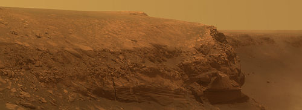
Intentó ver quien era el conductor pero fue inútil, ya que el traje no tenía identificaciones y el ángulo de visión no le permitía mirar en el interior del casco. Cuando cerró la puerta, y sin que él indicara ningún destino, el auto arrancó. Despacio al principio, hasta la sala de despresurización. Esperaron el minuto que lleva evacuar de aire la sala, y cuando se abrió el portón, el auto salió inusitadamente rápido.
La velocidad máxima para taxis en atmósfera natural era bastante alta, y estaba seguro de que no la estaban sobrepasando. Lo que le extrañó fue la aceleración inicial. Lo normal era que los taxis aceleren despacio, ya que de otra manera las ruedas resbalan sobre la superficie rocosa, sacudiendo innecesariamente a los integrantes del vehículo.
Estuvo todo el viaje esperando algo fuera de lo común. Después de todo, entre el auto y la hora formaban el número de la tarjeta. Estaba prácticamente decepcionado cuando se iba acercando a la entrada del domo de la mina, pero se alegró –¿no debía asustarse o por lo menos preocuparse?– cuando el taxi siguió de largo cerca de la entrada y dobló como para rodear el domo. Rodear no es el término adecuado, más bien lo esquivó, ya que siguió avanzando dejando el domo atrás.
Bruno escuchó el carraspeo inicial del altavoz cuando el conductor apretó el botón para hablar, y oyó a través del parlante de baja calidad:
–Por favor, ponete un traje que no vamos a entrar en atmósfera artificial –dijo el conductor–. Hay también un tanque de oxígeno extra.
–¿Adónde estamos yendo? –preguntó Bruno presionando el botón del intercomunicador. Al no tener respuesta, insistió: –¡Hola! ¿Podría decirme a dónde me lleva?
Resignado a que no le contestaran, decidió seguir el juego. Buscó y encontró debajo del asiento, junto a los trajes de emergencia del vehículo, un tubo extra de oxígeno. Se puso uno de los trajes y cuando estaba ajustando el tanque extra, el auto comenzó a disminuir su velocidad.
Ansioso, observó que el auto rodeaba una loma y comenzaba a descender hacia una especie de caverna en el lado oculto al domo. El auto se detuvo, se despresurizó la cabina y descendieron. Finalmente pudo observar el interior del casco del conductor, y sorprendido notó que era Roxana Carabajal.
–¡Hola! –saludó ella–. Sabía que vendrías aunque fuese peligroso –le dijo con una sonrisa.
Bruno se sorprendió de si mismo porque lo que ella decía era verdad. No conocía a Roxana Carabajal, y podía muy bien ser peligrosa. Incluso al pasar el domo de largo, se sintió más contento y curioso que preocupado. ¿Qué podía explicar este comportamiento? Confiaba en ella, pero no sabía por qué. ¿Porque lo atraía sexualmente? Nunca le había pasado de confiar en alguien sólo porque le gustara. No sabía y no tenía respuestas, pero sin embargo se daba cuenta de que tenía confianza en ella.
–No sabía si era peligroso, Carabajal –contestó Bruno luego de unos segundos–. ¡No sabía nada! ¿Adónde vamos?
–Ya vas a ver, no seas impaciente –contestó ella con una sonrisa más divertida que la anterior–. Y por favor llamame Roxana.
–¡Pero por lo menos decime qué estamos buscando! –pidió Bruno.
Roxana se dirigió al boogie en silencio, preguntándose si debía contarle o no. Todavía dudando, extrajo de un pequeño compartimento de carga una mochila que adosó al traje.
–Vamos, vamos, mejor nos ponemos en marcha, porque sino vas a estar preguntando todo el día –terminó la conversación mientras cerraba el vehículo y se aseguraba que la baliza del mismo emitiera en la frecuencia de emergencia, por si la tenían que utilizar luego para encontrar la salida.
Empezaron a descender a pie internándose por la gruta. Era un túnel angosto pero alto, y aunque debían caminar uno atrás del otro, iban cómodos. Roxana caminaba delante, guiando. Bruno caminaba divertido pensando en como habían evolucionado los trajes de superficie –mucho más finos, livianos y cómodos que los del espacio exterior– al punto de permitir disfrutar de las formas de una mujer al caminar.
Aunque llevaban una linterna cada uno, con los focos de los cascos era suficiente para iluminar el camino y poder apreciar las formaciones rocosas de las paredes del túnel. Bruno encontró en esas rocas las características halladas en los alrededores de la mayoría de las minas de hielo.
Llegaron a un recodo del túnel y cuando doblaban por él, Bruno comenzó a tener la misma sensación que había tenido con Ganduxer cuando fueron al precipicio. La zona le parecía conocida, aunque no lograba recordar de dónde. El había estado en varias cavernas de la Tierra y Marte, pero no lograba recordar una igual a esta. Sin embargo sentía que ya había hecho ese camino antes.
Era más extraño de lo que su mente consciente podía entender. Al principio veía detalles y le parecía recordarlos. En un punto del trayecto, como si comenzara a recordar toda la escena, comenzó a predecir los detalles que vería algunos pasos después, al iluminar nuevas zonas del túnel. Estaba viviendo una especie de déjà vu continuado.
Estaba tan absorto con esta situación que no se dio cuenta cuando el túnel se ensanchó levemente y Roxana comenzó a caminar junto a él. Estaba reviviendo el sueño que había tenido en tantas oportunidades en las últimas semanas. Apenas se había dado cuenta de ello, porque estaba tan concentrado que había perdido el sentido de la realidad.
Cuando Roxana se colocó al lado de Bruno, comenzó a contarle: –Descubrí este túnel casi por casualidad, recorriendo entradas de cavernas. Sabiendo que por esta zona estaba la caverna de la cual habían sacado las primeras imágenes de las escrituras, buscaba alguna caverna nueva, justamente para poder descubrir alguna inscripción, algún nuevo grabado que aportara luz a los que ya había estudiado.
»Te podrás imaginar mi decepción –continuó–, cuando por este túnel llegué a una bóveda desde donde salían a su vez varios túneles, ocho si no recuerdo mal, que complican toda la exploración. Están señalizados, pero jamás pude entender esos grabados, y la vez que vine no pude decidirme por donde seguir. ¡Ya llegamos!
Las últimas palabras las dijo al tiempo que giraba para mirar a Bruno, pero este siguió caminando como si nada.
–Esperá un segundo –le dijo mientras veía como la dejaba parada y seguía adelante–. ¡Te estoy hablando! ¿Adónde vas?
Enojada porque Bruno no le contestaba, corrió hasta alcanzarlo y se puso frente a él. Al principio se sorprendió cuando lo vio con los ojos cerrados, pero enseguida entendió.
«Así que los análisis eran correctos –pensó–. Realmente puede hacerlo»
Prestó atención y logró escuchar a Bruno respirando pausadamente. Nuevamente se colocó frente a él, y le iluminó la cara. Pudo percibir que los ojos se movían debajo de los párpados cerrados. Bruno estaba soñando.
Roxana se colocó detrás, dejándolo caminar tranquilo y comenzó a seguirlo. Vio como Bruno se metía en uno de los túneles de salida de la bóveda y comenzaba a caminar esquivando las salientes y agachándose en sitios donde la parte superior era más baja. Era increíble la seguridad con que atacaba las bifurcaciones en el túnel. Ahora a la izquierda, ahora a la derecha, sin un patrón aparente y siempre sin dudar ni un instante. «Definitivamente me hubiese perdido si venía sola» pensó Roxana.
Finalmente, luego de andar casi quince minutos, el túnel se terminó abruptamente y salieron al borde de un precipicio subterráneo. Bruno giró inmediatamente y comenzó a andar por el borde del mismo. A Roxana esa zona le pareció conocida, luego se dio cuenta. Apagó su linterna, y haciendo pantalla con sus manos para que no la molestaran las luces de Bruno, pudo ver un lejano y suave resplandor: se llegaban a ver las luces de la mina.
Ella ya había recorrido ese precipicio en otra oportunidad, pero por el fondo del mismo. Nunca encontró nada, pero tampoco llegó a notar que había un desfiladero tan lejos de la zona de trabajo de la mina.
Volvió casi trotando al lado de Bruno, quien seguía caminando dormido. Ahora Roxana no lo seguía de atrás, sino que iba al costado prestando mucha atención a los movimientos de su compañero, ya que temía que resbalara y cayera.
Llegaron a una especie de puente de piedra que unía los dos desfiladeros a través del precipicio. Bruno comenzó a cruzarlo sin cambiar su velocidad. En cambio Roxana tuvo que ir mucho más despacio, tratando de no perder el equilibrio, más preocupada ahora por si misma que por Bruno, quien ya le sacaba bastante ventaja: había llegado al final del puente y ya doblaba a la derecha.
El desfiladero por el cual caminaban ahora se terminaba abruptamente unos cien metros más adelante, dejando lugar a una caída casi vertical. Roxana, que no se había molestado en alcanzar a Bruno, vio como este seguía caminando tranquilamente en esa dirección y alarmada, trató de alcanzarlo para detenerlo.
07. Mensajes
En el momento que Bruno comenzó a ver las mismas escenas de sus sueños anteriores, empezando a revivirlos, quiso volver a la realidad pero no pudo. Estaba en ese tipo de sueños –o pesadillas– en las que uno no puede despertarse. Sabía que instantes antes estaba despierto y caminando por una gruta subterránea de Marte en compañía de una mujer que no conocía. Sabía que seguía caminando, aunque había cerrado los ojos y solo soñaba. Y lo que más lo desconcertaba era que se sentía tranquilo y feliz por esta situación.
El desconcierto absoluto llegó cuando sintió un golpe en la cabeza, después de una curva en su túnel imaginario. El veía que el túnel seguía, e intentó volver a caminar. Otro golpe. No podía avanzar. Iba a intentarlo nuevamente cuando comenzó a escuchar su nombre. Al fin pudo despertar.
Cuando Roxana notó que Bruno avanzaba hacia el borde del precipicio, corrió para pararse adelante e intentar detenerlo. Sin embargo Bruno, en lugar de seguir caminando en línea recta, y como burlándola, dobló hacia la izquierda, dio dos pasos y chocó contra la pared con un golpe seco. Ella, en vez de preocuparse comenzó a reír. Pero cuando Bruno chocó por segunda vez contra la pared, comprendió que seguiría así hasta romper el casco.
Comenzó a llamarlo y lo golpeó en el estómago, que era una de las pocas partes del traje que no estaba cubierto por equipos. Se tranquilizó únicamente cuando notó que Bruno volvía en sí.
–¡Bruno! ¡Bruno! ¡Despertate! –llamaba ella.
Bruno pareció despertar, pero en el momento que abrió los ojos, perdió el equilibrio y se cayó contra la pared.
–¿Qué pasó? –preguntó, todavía aturdido.
–No sé. Estuviste caminando dormido, me parece –indicó Roxana agachándose junto a él–. O hipnotizado.
–Recuerdo que iba caminando atrás tuyo y comencé a reconocer algunas escenas del túnel. A cada paso lo que veía se parecía más a lo que recordaba y luego me parece que me quedé dormido...
–...y soñaste todo el camino hasta acá –interrumpió ella con una sonrisa.
–¿Cómo lo supiste? –preguntó extrañado.
–¿No te llegaron los informes? Nosotros soñamos escenas reales, que nos dan información que estamos necesitando –contestó Roxana ayudándolo a pararse–. Es como que una parte de nuestro cerebro intuye la solución a algo y nos la transmite de esa forma.
–Si, pero yo estuve soñando esto desde hace semanas –aseguró Bruno.
Roxana se quedó callada unos segundos.
–Todos los ensayos que recuerdo, se hayan hecho en el laboratorio de mi padre o no, siempre se basaron en la resolución de problemas que se le presentan al sujeto de muestra. Nunca se hicieron ensayos con respecto a premoniciones o temas similares –concluyó.
Bruno se apoyó contra la pared, todavía estaba un poco mareado. Algo le parecía fuera de lugar en lo que había dicho su compañera y enseguida se dio cuenta.
–¿Qué informes debían llegarme? –le preguntó.
–Son tres documentos, entre los que está el análisis hecho por mi padre. Se suponía que debía entregártelos Di Francesco.
–¿Di Francesco? Esos informes me los dio Ganduxer, dijo que venía de parte de la Organización.
–¿Quién es Ganduxer? –preguntó Roxana extrañada.
–¿Cómo quién es Ganduxer? ¡La persona con la cual estabas luchando el otro día en tu casa! –argumentó él.
–No sé quien era ese tipo, ni qué quería. Pero considerando que tenía los informes de Di Francesco, y que a Di Francesco lo asesinaron...
Bruno no contestó. Se quedó pensando en la posibilidad de que Ganduxer fuera el asesino que sugería Roxana, aunque en aquella oportunidad él había dicho lo mismo sobre ella. Recordó la situación ocurrida. Quería preguntarle por qué le había dado gotas de su sangre, pero pensó que mejor sería esperar a tener los resultados del análisis para jugar sobre seguro.
Mientras tanto, Roxana estaba estudiando la pared contra la cual había chocado Bruno. Había examinado su alrededor y ahora estaba sacando un instrumento parecido a una lapicera.
–Mirá –llamó a Bruno–, parece ser otro tipo de material que el de alrededor.
Apoyó el instrumento contra la pared y esperó unos segundos, luego leyó el indicador.
–¡Cinco centímetros! –exclamó, dándole el instrumento. Bruno tomó la varilla, notando que no era más que un medidor ultrasónico. Realmente la pared era muy fina, apenas más de cuarenta y ocho milímetros. Observó detenidamente la pared y pudo notar ciertas irregularidades. Sacó un martillo de repetición y comenzó a impactar sobre la pared.
En pocos minutos lograron el primer agujero. Iluminando con las linternas por él pudieron ver que del otro lado había un túnel, y llegaron a la conclusión de que el taponamiento era artificial. El resto de la pared cedió fácilmente, y cuando terminaron dejaron una abertura con forma de arco de medio metro de altura.
Detrás de la puerta/pared había un pequeño corredor que desembocaba en una escalera que descendía en espiral. Era a todas luces artificial. Decidieron comenzar a bajarla. Minutos después llegaron a la base: era un pequeño espacio que daba la bienvenida a una inmensa sala, cuyos límites no eran alcanzados por las luces de sus linternas.
Decidieron alejarse de la entrada, Bruno caminando e iluminando hacia delante y Roxana de espaldas e iluminando la abertura de acceso a la caverna. No querían alejarse demasiado. Cuando comenzaron a perder de vista la entrada, se detuvieron y encendieron una bengala. Lo que vieron los dejó sin habla.
La sala era una inmensa semiesfera. Y no en sentido figurado sino literal: era una semiesfera perfecta. En toda la periferia, desde el piso hasta una altura de dos metros, había dibujos geométricos y grabados con el tipo de letra que había visto Bruno en las fotografías. Pero en la parte superior y hasta incluso en el mismo techo de la esfera había dibujos en bajorrelieve de una belleza esplendorosa.
–¡Es fantástico! –exclamó Bruno, quien recuperó el habla primero–. ¡Es hermoso!
–Más que hermoso –resaltó Roxana–. Fijate que los dibujos comienzan a una determinada altura, y que en toda la periferia, de esa horizontal para abajo son grabados del mismo estilo que los que estudiamos.
–Es verdad. Seguramente la parte de abajo son mensajes, o textos que querían transmitir.
–Sí. La zona de arriba está cubierta de adornos, o alguna forma de arte.
–No sé si es arte, pero me transmite la sensación de que eran una raza evolucionada, más aún que la perfección de esta semiesfera –concluyó Bruno señalando a su alrededor.
Volvieron a la realidad cuando la luz de la bengala comenzó a decaer. Finalmente se apagó y no pudieron seguir observando las maravillas del techo. Con la seguridad de que no se perderían, porque la bóveda tenía una sola entrada, se acercaron a la pared y comenzaron a recorrer los jeroglíficos con las linternas, tratando de entenderlos.
Parecían tener sentido pero no entendían cuál. Aunque no lograban descifrar el mensaje, reconocían que las inscripciones tenían una estructura. Finalmente, con la ayuda de otra bengala, fotografiaron todas las paredes y se fueron de ese maravilloso lugar.
Volvieron por sus pasos y cruzaron el puente de piedra. Fue Bruno quién primero se percató del problema al que se enfrentaban.
–No recuerdo nada del camino que tomamos para venir –comentó–. Para colmo estamos fuera de alcance de la baliza del boogie.
–Yo no presté mucha atención porque estaba vigilándote, pero no creo que tengamos mayor inconveniente –aseguró Roxana.
–La verdad es que no estoy seguro –dijo Bruno–. Fijate como todos los desvíos parecen iguales.
–No te preocupes, estoy convencida de que no vamos a tener problemas en encontrar el camino correcto.
Sin embargo Roxana se equivocaba, ya que la última decisión que tomaron con plena seguridad de lo que hacían fue la de entrar al túnel luego del puente de piedra. En quince minutos ya se habían convencido de que no recordarían el camino de regreso, por lo que decidieron volver al precipicio, al primer túnel, e ir marcando las bifurcaciones. Si en dos horas de caminata no encontraban la salida, tendrían el oxígeno justo para volver al precipicio e ir por allí hasta la mina de hielo. Tendrían que dar demasiadas explicaciones, pero sobrevivirían.
Fueron y vinieron, vinieron y fueron, llevaban una hora y les quedaba oxígeno solamente para tres horas más. Calculaban que les tomaría una hora, una hora y media como máximo recorrer el camino del puente de piedra hasta la mina.
Se detuvieron en una bifurcación, y luego de decidir que camino tomarían, Bruno comenzó a marcar la pared. Roxana se apoyó contra la pared opuesta, de espaldas, y cerró los ojos unos instantes. Cuando los abrió nuevamente, se quedó mirando fijamente la pared que tenía adelante. Por un segundo, un momento solamente, había visto un detalle que ahora no podía identificar.
–¡Bruno! –exclamó–. ¡Acá hay algo!
–¿Dónde? –preguntó Bruno, que no sabía ni donde mirar– ¿Dónde hay algo? ¿Y qué es?
–Acá. Me parece que acá –respondió Roxana palpando la pared en cuestión–. Vi algo, como una diferencia de texturas o colores. Pero lo perdí.
–¿Una diferencia en el tipo de piedra?
–Sí –aseguró ella iluminando la pared de costado.
–Tengo una idea –dijo Bruno con entusiasmo–. Pasame el medidor ultrasónico.
Utilizando el sensor descubrieron que una zona de la pared, con forma de semicírculo y de aproximadamente setenta centímetros de altura, presentaba un espesor menor que el resto de la misma. Marcando los bordes, notaron que esta zona de roca no estaba soldada a la pared, sino que tenía una luz ínfima, rellena con algún material del mismo color, como cementando ambas partes.
Cincelaron esa unión, y solamente empujando el pedazo de pared pudieron despejar la entrada. Se agacharon y cruzaron gateando los veinte centímetros de pared, entrando a otra bóveda. Cuando prendieron la bengala notaron que esta caverna era mucho más chica que la anterior. Del otro lado de la caverna había una abertura mayor que la que utilizaron para entrar.
Recorrieron con la vista las paredes, y cuando se dieron vuelta vieron que no estaban solos. Otra persona los observaba sentada al costado de la puerta. Los dos se quedaron paralizados y durante muchos segundos la única señal de vida en la bóveda fue un débil gemido gutural de Roxana. Bruno fue el primero en recuperarse. Se acercó a la persona y descubrió la razón de la inmovilidad de este: el visor del casco presentaba una rajadura.
Cuando conscientemente se dio cuenta que la persona en el interior del traje estaría irremediablemente muerta, ya era tarde: había mirado en su interior. La visión de la cabeza del cadáver, seca y reseca, chupada y con los ojos saltones, le trajo instantáneamente arcadas. Se arrodilló contra la pared, cerró los ojos con fuerza, y luchando contra si mismo, logró respirar profundamente y calmarse.
Consciente de que a duras penas había evitado una de las muertes más grotescas (vomitar dentro del casco del traje presurizado), se acercó a Roxana para verificar que estuviese bien, y se llevó la mayor sorpresa desde que entró en esta serie de cavernas. Con el resto de luz de la bengala apagándose, la vio parada en el mismo lugar que la había dejado, tan rígida como cuando terminaron de voltear mirando las paredes, pero llorando. Varias lágrimas le caían de los ojos y su cara reflejaba un profundo dolor.
Instantes después ella se acercó y se arrodilló junto al muerto y se quedó varios minutos. Bruno, conforme de saber que estaba físicamente bien por los sollozos en la radio de su casco, la dejó tranquila, tratando de comprender la situación. Cuando Roxana se paró y se dirigió a él, se la notaba más tranquila.
–Perdoname –le dijo–. No me pude contener.
–¿Pero qué pasó? –preguntó Bruno–. ¿Lo conocías? ¿Quién era?
–Era mi padre –respondió ella amagando comenzar a sollozar nuevamente–. Vinimos a Marte hace más de cinco años buscando pistas sobre la Raza Perdida. Realizó muchísimos trabajos de arqueología, algunos conmigo, pero este fue el último. Salió una mañana y nunca lo volví a ver. Hasta ahora.
–Pensé que era un lingüista solamente –dijo Bruno, intentando derivar la conversación a recuerdos menos dolorosos para ella.
–No, él comenzó de esa manera. Hasta que llegaron a sus manos fotografías de los grabados –explicó ella–. Los analizó y aunque al principio no pudo deducir el mensaje, quedó impresionado por el lenguaje en sí. Yo terminaba mis estudios por esa época y el tema me cautivó. Luego de agotar todos los recursos en la Tierra, decidimos venir a Marte para seguir investigando.
–¿Alguna vez pudo descifrar el mensaje?
–El no, pero yo avancé muchísimo, gracias a que en varias oportunidades soñé partes de la solución. Sin embargo, todavía no pude completar la estructura básica del lenguaje. Es por eso que estoy aquí ahora buscando más información.
Luego de la explicación de Roxana, la conversación cayó en un pozo. El silencio era embarazoso y él no sabía que hacer ni como actuar. Por suerte, cuando ella se recuperó totalmente, tomó la iniciativa. Le sacó el casco al cadáver de su padre, abrió el traje y comenzó a registrar sus ropas. Bruno, ante la vista de cuerpo entero del explorador, no tuvo más remedio que apartar la mirada. Pensaba como reaccionaría ella si le ofrecía enterrar el cadáver, aunque desistió de la idea al darse cuenta de que el suelo de la caverna era de roca sólida, y que transportar el cuerpo hasta la superficie sería una labor tremenda, incluso si llegaban directamente a la salida sin perderse en el camino.
Esto le hizo recordar lo poco que les quedaba de oxígeno, y le avisó a Roxana. Ella ya estaba cubriendo el cuerpo con el traje y pocos segundos después le contestó que podían irse.
Roxana había encontrado en el traje de su padre una computadora portátil con imágenes de las paredes, anotadas y explicadas. Por lo visto, Félix Carabajal no era la primera vez que estaba en esa caverna, lo que les hizo pensar que la salida mayor los llevaría directamente al exterior. Salieron entonces no por donde entraron, sino que fueron por la entrada principal, opuesta a la que ellos abrieron.
Luego de un corto túnel, llegaron a lo que se parecía mucho, quizás demasiado, al hueco de un ascensor. No tenía escalera, pero al ser las paredes muy irregulares, y al poder alcanzarse paredes opuestas con ambas piernas simultáneamente, era muy fácil de escalar.
Terminaron de subirlo, y con alegría notaron que podían captar la baliza que emitía el boogie. Luego de un pequeño corredor más, llegaron a la caverna inicial, de la que salían muchos túneles. Bruno no podía creer la cantidad de pasadizos y cavernas que había en esa zona. Estaba seguro de que eran artificiales, ya que él conocía bien las estructuras internas de las minas de hielo y no eran ni por asomo de esa manera.
Quince minutos más de caminar y ya estaban en el boogie. Durante ese trayecto y todo el viaje hasta el domo principal, Roxana se mantuvo callada. Bruno luchaba internamente con su indecisión, no sabiendo si hablarle para darle un tema de conversación y distraerla, o respetar su silencio y dejarla tranquila.
08. Exodo
Una vez que dejaron el auto en la Central de Taxis, fueron a la casa de ella y comenzaron a estudiar las imágenes que ambos habían fotografiado en la caverna grande, así como también los documentos de Félix Carabajal sobre los grabados de la caverna chica.
De las imágenes que ellos tomaron no habrían podido sacar nada sin los documentos del padre de Roxana. Para ellos fue como la Piedra Rosseta. Félix Carabajal tenía explicados y traducidos los dibujos de la caverna donde murió.
Esta caverna contaba momentos de la última época de la raza, de una sequía que, cada vez más pronunciada, los forzó a empezar a utilizar los ríos subterráneos y a inventar mecanismos artificiales de vida. También había referencias a una emigración del planeta y a experimentos de ingeniería genética.
Uno de los principales problemas que tenían era entender la línea de tiempo de la historia, y poco es lo que ellos armaron a partir de las traducciones de Félix Carabajal, ya que solamente lograron conceptos separados, pensamientos aparentemente inconexos. Sin embargo les sirvió para entender la última caverna. Ellos supusieron que si podían extrapolar estas traducciones a la caverna grande, podrían sacar más información, ya que a todas luces la otra caverna era más importante, por los dibujos y las formas, casi religiosos.
Durante esos días de traducciones, prácticamente se olvidaron de su entorno. No se preocuparon por CER0 ni por Ganduxer, aunque trataban de llamar la atención lo menos posible. No ponían música fuerte y trataban de no hacer ruidos en las horas nocturnas.
En una ocasión, Bruno salió de compras y cuando entraba en un local de comidas creyó ver en el reflejo de una vidriera a alguien conocido. Fue sólo un instante y se dio vuelta para buscarlo pero no encontró a nadie. Enseguida se olvidó del asunto y no se sintió perseguido ni vigilado en ningún momento. Distinta hubiese sido su reacción si hubiese llegado a reconocer a Ganduxer en la imagen reflejada.
A las dos semanas de trabajo ya habían establecido todos los paralelismos posibles entre las imágenes de la caverna de Félix Carabajal y la principal, pero aún no habían descubierto el mensaje completo que querían transmitir los grabados. Tenían los conceptos separados, pero apenas lograban hilarlos de manera que tuvieran alguna coherencia.
Así pasó casi un mes, hasta que una noche se alteró su rutina. Bruno soñaba que iba por las grutas y tomando voluntad de si mismo en el sueño, fue a la primera placa que había visto con Ganduxer. No sabía por que quería ir pero sentía la necesidad. Cuando llegó a la placa la leyó. Y no es que miró los dibujos o letras. La leyó. Comprendió lo que significaba. Se despertó bañado en transpiración. El cartel decía PELIGRO.
Se levantó y fue al estudio. Roxana no estaba. No estaba por ningún lado. No era extraño que saliera de noche, acostumbraban a hacerlo para las compras. Salió del departamento y cuando cerró la puerta vio que estaba cruzada con un CER0 en aerosol.
Volvió a entrar, recogió los papeles y los discos con toda la información y los puso en una mochila. Salió corriendo y bajó las escaleras. En la entrada principal del edificio prácticamente se la llevó por delante.
–¡Acá estás! –le dijo Bruno, casi retándola.
–¿Qué pasó? ¿Adónde vas? –quiso saber ella.
–¿No viste la amenaza en la puerta? ¡Debemos irnos!
–¿Qué amenaza? Yo no vi ninguna amenaza en ningún lado –respondió Roxana.
–¿No estaba antes? ¡Vení, mirá!
Bruno prácticamente la arrastraba, ella no le creía del todo. Solamente se convenció de que era cierto cuando vio la puerta pintada. Afortunadamente Roxana no entró en estado de pánico, sino que se puso a razonar inmediatamente en dónde podían refugiarse.
–A tu casa no podemos ir, seguro va a estar vigilada.
–Tenés razón –aceptó Bruno–. Nos queda el hotel y mi oficina.
–En el hotel nos pueden ubicar fácilmente.
–En la oficina también –argumentó Bruno–. Pero hay mayor seguridad y podremos trabajar más tranquilos.
–Bueno, vamos –aceptó Roxana–. De paso conoceré tu lugar de trabajo.
Trabajaron arduamente, y sin embargo al final de la primera semana en la mina solamente habían logrado cumplir medianamente bien su objetivo. Aunque estaban principalmente en la oficina, la secretaria de Bruno tenía órdenes de no pasar ninguna llamada y decir siempre que no podía recibir a nadie, por lo que tenían los días completos para trabajar tranquilos. Salían únicamente de noche, a los vestuarios para asearse, o en ocasiones para caminar y despejar sus mentes.
Al final del segundo día allí, Bruno recibió un correo de su hermano con los resultados del análisis de Roxana. Esperó a que ella fuese a bañarse esa noche para leerlo tranquilo.
El análisis confirmaba su sospecha: ella poseía un porcentaje anormalmente elevado de la cadena de genes, aunque un poco menos que él mismo. Se alegró por haber predicho este resultado, pero quedó preocupado por su hermano.
No sé que carajo está sucediendo acá. Me mandás dos análisis de sangre, y en ambos encuentro una característica tan rara, que para encontrar otras dos muestras al azar me llevaría años.
¿Qué está pasando? Gracias a que hice los análisis con un amigo mío pude mantener los resultados en reserva, ¡pero me debés una explicación!
Bruno le contestó con unas pocas líneas prometiéndole información, pero enseguida su mente comenzó a divagar sobre la situación de Roxana. Ahora estaba seguro de que ella pertenecía a los descendientes de la antigua raza, lo que justificaba la explicación que había dado ella sobre su deducción del lenguaje. Sin embargo en esos días no pudieron adelantar significativamente en la comprensión del mismo.
Aunque habían podido avanzar muchísimo en la traducción de los grabados, no lograban encontrar la manera de hacer legibles las ideas que intentaban traducir: podían entender muchos de los conceptos, pero muchas veces no lograban correlacionarlos entre sí. Las veces que lograban hacerlo, lo hacían por contexto, lo cual no los satisfacía totalmente, ya que no podían asegurar que fuese la traducción correcta.
Con todas estas dificultades igualmente lograron armar una historia coherente. Comenzaba explicando como el agua se había ido agotando, hasta que más allá de los mecanismos de supervivencia que les permitía ganar tiempo, tuvieron que decidir la migración. El único planeta con las condiciones más cercanas a lo que ellos necesitaban para vivir era el que ellos denominaban Tercero (evidentemente, la Tierra).
Sin embargo sabían que no les era posible llegar y coexistir con otra raza bípeda ya presente allí. Al parecer esto se debía a que la naturaleza violenta de los Seres del Tercer Planeta, junto al natural pacifismo de ellos, pronosticaba que serían masacrados en pocos años.
Decidieron entonces establecer un puesto de observación donde pudieran evaluar mejor la situación, ya que desde Marte no tenían una visualización correcta del modo de vida de los bípedos. Mandar exploradores al Tercer Planeta era complicado porque el intercambio de información tardaba demasiado, y era demasiado peligroso para ellos, ya que no querían defenderse y no les sería fácil escapar con la mayor gravedad del planeta. Encontraron sin embargo un puesto de observación que les satisfizo y a este destino fueron los últimos centenares de supervivientes.
Cuando por fin lograron entender el mensaje, a Bruno y Roxana les pareció que su estadía en Marte había llegado a su fin. Necesitaban encontrar los restos de lo que creían su raza, y sabían que encontrarían muchísima más información en el refugio final de ésta. El problema es que no sabían dónde podía llegar a ser este lugar.
Ante la imposibilidad de deducir de los grabados el destino final de la antigua raza, intentaron inferirlo a partir de condiciones de vida o parámetros de seguridad, que creían haber entendido. Notaron que ante todo debían estar a salvo de los bípedos, que al no poder establecer claramente la fecha de los grabados suponían que eran algunos de los puntos intermedios entre homo erectus y homo sapiens. Era muy importante también la disponibilidad de agua, razón fundamental de su éxodo de Marte.
Primero pensaron en una montaña, pero no creían que allí hubiesen estado a salvo de los predadores. Segundo, se les ocurrió que podría haber sido uno de los tantos desiertos de la Tierra, pero seguían sin solucionar el problema del agua. Roxana insistía con que no sabían cuanta agua era poca para la raza, quizás algunos mililitros por persona por año eran suficientes y el desierto era adecuado. Otra opción que manejaron fue la del fondo del mar, o las profundidades de los lagos, pero no creían que vivir sin atmósfera y con mucha mayor presión de lo normal les agradase.
Estuvieron varios días intentando establecer el lugar o cambiar algún significado de los grabados. Como ahora sus tareas de traducción no eran tan específicas ni tangibles, salían a pasear y distenderse mucho más seguido que antes.
Cuando salía tarde de la oficina Bruno acostumbraba a ir a mirar las estrellas al Observatorio. Este estaba ubicado justo bajo la zona central de la cúpula, donde habían instalado un telescopio abierto al público día y noche, rodeado de un pequeño parque con sillas reclinables adecuadas para disfrutar del cielo. Quizás más importante que el telescopio era que esa zona de la cúpula se mantenía siempre perfectamente limpia, lo que ofrecía la oportunidad de un espectáculo maravilloso, incluso a simple vista.
Cuando Bruno salió esa noche para relajar su mente y dejar que su subconsciente trabaje con la traducción de los grabados, se dirigió inconscientemente al Observatorio.
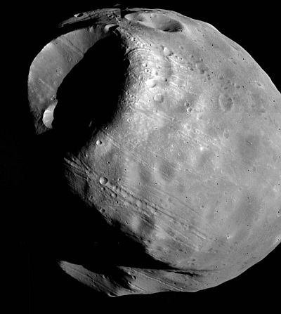
Iba pensando en como su historia personal había cambiado radicalmente en las últimas semanas. Siempre había sentido que había algo latente en su vida, algo de aventura que no terminaba de comenzar. Quizás por eso cuando su rutina de arquitecto de minas, apacible, de la oficina al hogar y viceversa, se vio modificada con la amenaza de asesinato no tuvo pánico ni entró en un estado de desesperación.
Incluso cuando le contaron que pertenecía a los restos de otra raza, y lo verificó con su hermano mediante la cadena de genes, no tuvo mayor problema en asumir la realidad. Aunque pensándolo bien quizás había sido demasiado crédulo. Quizás era todo una farsa y estaba buscando fantasmas que nunca existieron. Por otro lado, cerraba todo demasiado bien, la cadena de genes, la confirmación de su hermano de que era rara y aún sin clasificar, de que habían tratado de matarlo como explicó Di Francesco, y que en la misma situación estaba Roxana.
No podía estar seguro, razonando los hechos, de no estar tirando su vida por la borda en vano. Pero su seguridad venía por otro lado. No la razonaba, la sentía. Era como cuando había decidido venir a Marte. Siempre, desde que recordaba de niño, había pensado en vivir en Marte. Nunca con su hermano pensaron que la Tierra era su destino. Incluso desde chicos ya jugaban a los astronautas. Cuando su hermano se graduó y decidió comenzar a trabajar en la Luna, toda su familia se opuso, excepto él.
Prácticamente sin darse cuenta, había entrado al Observatorio y se había sentado en una de las sillas reclinables y estaba mirando las estrellas. Recordó una de las principales peleas con sus padres cuando su hermano ya incluso tenía el puesto asegurado en Laboratorios Luna. Había sido la discusión definitiva. El había zanjado la cuestión con un montón de razones que en retrospectiva parecían tontas, casi absurdas. Es interesante notar como su hermano sentó precedente de tal manera, que cuando él mismo decidió venir a trabajar a Marte, sus padres ya estaban resignados.
Le encantaba observar a Fobos. Cuando recién había llegado, le impactaba más la noche de doble luna, pero Fobos llena era su espectáculo favorito. La baja densidad de la atmósfera marciana lo ayudaba a apreciar mejor los detalles.
Quizás de la misma manera, el tiempo ayudaba a ver mejor los detalles de su pasado. Le gustaba recordar momentos de su vida y sacar nuevas conclusiones sobre ellos. Sentía ahora, recordando como Adrián lo había incentivado a irse a trabajar a una mina marciana, una satisfacción general que no recordaba haber sentido antes. Aunque quizás esa satisfacción era falsa, ya que él tendía a bañar con una alegría especial sus recuerdos relacionados con venir a Marte.
A veces le resultaba difícil ser objetivo consigo mismo. Le gustaría poder ser mejor evaluador de su pasado. Necesitaría poder observarse sin estar lo suficientemente cerca como para distorsionar sus decisiones con subjetividades. Si pudiese tener un gemelo en Fobos, pensó, éste podría observarlo en su vida diaria y analizarlo objetivamente. Necesitaría un buen telescopio, pero lo vería sin problemas.
Se imaginó a él mismo en Fobos, viéndose sentado en el Observatorio. Ahí no habría problemas, ya que la cúpula estaba reluciente, pero en otras zonas del domo las placas no recibían tan buen mantenimiento. Ahora, si no estuviesen los domos, podría ser vigilado tranquilamente...
A veces las ideas llegan de repente, otras veces no. En ocasiones, uno empieza a vislumbrar la conclusión final, ve como crece, toma forma, hasta que se muestra totalmente. En otras oportunidades, impacta con la fuerza de un meteorito. Uno está totalmente desprevenido, y la idea le pega de tal forma que queda aturdido.
Bruno se sentó derecho, enderezando la espalda y se quedó completamente rígido, como un lobo en el bosque cuando trata de ubicar e identificar un ruido. Solo que él estaba tratando de ubicar y reconocer la idea dentro de su cerebro. Un segundo después, salió corriendo para la zona de oficinas de la mina.
Entró como una tromba a su oficina despertando a Roxana, que con la cabeza entre los brazos dormitaba apoyada sobre el escritorio.
–¡Lo tengo! ¡Lo tengo! –gritaba Bruno, haciendo aspaviento.
–¿Qué pasó? –preguntó Roxana todavía despertándose–. ¿Qué tenés?
–¡La solución! ¿Cómo no se me ocurrió antes? ¡Es evidente!
–Pará un poquito –lo frenó ella, bostezando–. Haceme un favor y traeme una taza de café.
–¿Café? ¡No! Encontré la solución, ¿entendés? ¡Lo descubrí!
–Bruno, lo único que puedo llegar a entender es que estoy dormidísima. Traeme café bien caliente, ¿querés?
Cuando Bruno volvió con dos tazas de café, Roxana ya estaba más despierta y él mismo más tranquilo.
–Encontré el lugar al cuál se fueron cuando emigraron –le contó Bruno–. Fijate que cumple todas las condiciones en que pensábamos: ¡es la Luna!
–¿La Luna? ¡La Luna, tenés razón! –dijo Roxana abriendo desmesuradamente los ojos–. De allí podían estudiar tranquilamente a nuestros antepasados sobre la Tierra, ya que no corrían ningún peligro.
–Así es –aprobó Bruno–. Fijate además que está resuelto el tema del agua.
–Es verdad, allí tenían todo el agua que podían llegar a necesitar, aunque seguimos sin saber cuanto realmente necesitaban.
–Incluso –continuó Bruno– está solucionado el tema de la gravedad.
–Siempre intentamos establecer como les afectaría la mayor gravedad de la Tierra y nunca se nos ocurrió que en la Luna incluso es menor que en Marte –razonó Roxana–. Entonces cierra todo. Debemos concluir que se fueron a la Luna. ¡Era el lugar ideal!
–Lo cual nos lleva a todo un nuevo problema –acotó Bruno ensombreciendo su expresión.
–¿Cuál?
–¿No lo ves? Si se fueron a la Luna, ¿por qué nunca encontramos nada allá?
–¿En la superficie? –preguntó Roxana.
–En la superficie seguro que no hay nada, está explorada completamente desde hace mucho tiempo –razonó Bruno–. Pero fijate que acá en Marte no encontramos restos en la superficie, sino enterrados.
–Es verdad, pero no podemos excavar al azar en la Luna hasta encontrar algo –argumentó Roxana–. ¡Tardaríamos años! Sin embargo es seguro que fueron allí, cierra demasiado bien con toda la información que dejaron.
Siguieron discutiendo que camino tomar, pero no se decidían. Finalmente, viendo que sus investigaciones seguirían sí o sí en la Luna, decidieron viajar hasta allá. De esta manera también escapaban de las amenazas de muerte de CER0, lo que les permitiría moverse más tranquilos.
Juntaron toda la información que no podían enviar directamente a través de la terminal, y al otro día, pasando la medianoche, tomaron el vuelo a la Luna.
09. La Organización
Darío Ganduxer se sentó en su sillón preferido de la sala de reuniones. En lugar de ser la típica habitación de mesa ovalada, inmensa y rodeada de sillas, este salón poseía una gran mesa con sillas en un extremo pero además del otro lado había sillones, divanes, e incluso algunos almohadones sobre el piso alfombrado. Realmente se percibía un clima distinto.
Cerró los ojos y se recostó. Los miembros de la junta vendrían de un momento a otro y él quería estar tranquilo. Sin embargo su mente saltaba como con voluntad propia por los hechos sucedidos en las últimas semanas.
Recordaba cuando se habían contactado con él para hacer un trabajo de investigación en Marte. Su fama lo precedía, y un trabajo de investigación no significaba más que vigilar y analizar, aunque siempre preparado para la violencia. Cuando él puso su precio y la Organización corrigió el número agregándole un cero a la derecha, decidió que haría lo que le pidiesen sin plantear objeciones.
Incluso aceptó trabajar en Marte, aunque se sentía mucho más cómodo en la Tierra: en caso de problemas siempre sabía a dónde y cómo escaparse y esconderse. Sin embargo, más allá de todas esas precauciones, no había tenido problema alguno con las fuerzas de seguridad marcianas.
Se felicitaba a si mismo por habérsele ocurrido tomar los asesinatos de cero, organización que no conocía ni quería conocer, y utilizarlos como distracción para sus actividades. La policía se ocupaba de armar el rompecabezas con todos los asesinatos y él había podido robar a Di Francesco y salir completamente impune, aunque cuando llegó al departamento de su víctima, este había sido recién asesinado y no estaba seguro de hasta que punto la idea era incriminarlo a él.
También habría podido secuestrar a Roxana Carabajal de no haber llegado justo Bruno Becker. Es más, podría haber secuestrado o matado a ambos, de no haber sido por las órdenes explícitas de la Organización, y jamás habría tenido problema alguno con la policía.
Abrió los ojos cuando oyó la puerta y se enderezó en el sillón. Cuatro personas vestidas de saco y corbata tomaron lugar en otros asientos, y luego llegó una quinta persona, mínimo treinta años más viejo que el resto, vestida informalmente.
Siempre le había intrigado la estructura de la Organización. En las cuatro reuniones que habían tenido, siempre había estado con cuatro ejecutivos y el Viejo –como él lo llamaba–, sólo que el Viejo era siempre el mismo y nunca se repitieron los ejecutivos. Estos últimos llevaban la marcha de las reuniones mientras el Viejo se sentaba alejado de todos y cerraba los ojos. Sin embargo, cuando hablaba, el resto callaba automáticamente.
–Ante nada le queremos agradecer por los servicios prestados –comenzó uno de los ejecutivos sin saludar siquiera–, ha hecho un excelente trabajo.
–Debemos dar por terminado el contrato en este punto –continuó otro– ya que imprevistos nos han obligado a cambiar la estrategia.
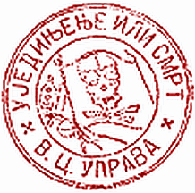
–Por el dinero no se preocupe –siguió un tercer trajeado–, ya tiene depositado el veinte por ciento en Marte y el ochenta por ciento en los tres bancos de la Tierra, como habíamos arreglado. Recibió también un diez por ciento adicional en recompensa por la calidad de su trabajo.
–Esperen un momento –interrumpió Ganduxer, molesto por el cambio de órdenes y fastidiado por la payasada de que cada uno diga cuatro palabras–. ¿Qué pasó? ¡Exijo explicaciones! No me pueden cambiar las órdenes así.
El cuarto ejecutivo continuó con la ronda sin prestar atención a lo que había dicho Ganduxer.
–Tiene tres días para abandonar Marte –le dijo–, y no debe volver nunca más.
Ganduxer se levantó furioso.
–¡Esto no puede ser! ¿Quiénes se creen que son para obligarme a abandonar el planeta? –les gritó.
Entonces el Viejo abrió los ojos y se acomodó en el sillón donde reposaba. Ante su intención de hablar, los ejecutivos giraron hacia él con atención.
–Es extremadamente importante –comenzó– que no persiga más a Bruno Becker ni a Roxana Carabajal. No se meta más con ellos.
Entonces el Viejo giró la cabeza y miró a Ganduxer directamente a los ojos, haciendo que le recorra un escalofrío ante su poderosa mirada. Prácticamente sin darse cuenta, se sentó.
–Desaparezca –ordenó–. Se juega la vida en ello.
Acto seguido, el Viejo se levantó y se retiró de la habitación, con los cuatro ejecutivos pisándole los talones como perritos falderos.
Ganduxer estaba enojadísimo. Furioso. Se levantó y se fue. Odiaba que no le diesen explicaciones. ¡Al demonio! Había hecho muy buen dinero con muy poco esfuerzo. Quizás la responsabilidad de una muerte, algunas peleas, y se iba tranquilo de Marte. Con lo que había ganado podría descansar un buen tiempo.
No había caminado doscientos metros que sintió que lo perseguían. Tenía esa tenue sensación de estar siendo observado. Convencido de que alguien lo estaba siguiendo, se paró frente a unas vidrieras para disimular. Rápidamente ubicó a una persona con un simple movimiento de su cabeza. Definitivamente no lo seguía un experto, era alguien sin entrenamiento.
Demoró sus pasos y dejó que se le acercara. Al doblar una esquina entrando en una calle desierta, se escondió en una saliente. La persona que lo seguía dobló corriendo pero se frenó en seco al no verlo en la calle. Ganduxer salió de su escondite, agarró al tipo de la ropa y lo arrojó contra la pared.
–¡Pará, pará! –suplicó este–. ¡Por favor no me pegues!
–¿Quién mierda sos? –preguntó Ganduxer, medio enojado, medio divertido– ¿Por qué me seguís?
–No quería encararte cerca de la vigilancia de la Organización –contestó con miedo–, pero tampoco quería perderte.
Con una mano todavía agarrándolo del cuello, Ganduxer le soltó un puñetazo en el estómago.
–No te creo. ¿Qué carajo querés?
–Por favor, es por otro trabajo –dijo el tipo–. ¡Dejame explicarte!
Ganduxer lo soltó y esta persona se enderezó. Sin embargo seguía atemorizado, miraba constantemente sobre el hombro y se refregaba las manos, a todas luces se notaba que el causante del miedo no era Ganduxer.
–Represento a un sector de la Organización que no está de acuerdo con el Director –dijo apresuradamente–. Nosotros queremos a Bruno Becker muerto lo más rápido posible.
Ganduxer lo miró detenidamente, estudiándolo. Su interlocutor era casi la imagen opuesta a la del tipo de persona que normalmente se encargaba de ese tipo de trabajo. Era petiso, flacucho, muy poco pelo, y con una mirada aburrida. Definitivamente parecía más un contador que el contacto de un asesino a sueldo.
–Nos encargamos de Fabián Di Francesco cuando se puso peligroso, y aunque el Director tiene pensado otro destino para Bruno y su compañera, nosotros necesitamos que mueran –continuó el hombrecito–. Le pagaremos lo usual por este tipo de trabajo más un veinte por ciento si lo ejecuta antes de dos semanas. Sin adelantos, el monto total una vez acabada la operación.
Cuando terminó su pequeño discurso pareció haberse sacado un peso de encima. Más relajado, ya no se retorcía las manos, sino que las había cruzado en su espalda y esperaba que Ganduxer le contestara.
–¿Así que ustedes mataron a Di Francesco? –le preguntó Ganduxer para ganar tiempo.
–Se podría poner de esa forma.
–Yo tenía como encargo robarle unos documentos. Cuando llegué a su departamento ya estaba muerto.
–Nosotros nos movemos con independencia de las órdenes que se dan en la Organización –explicó el mensajero–. Necesitábamos matarlo por la información que conocía.
Habiendo tomado la decisión, Ganduxer dio por terminada la conversación: –Acepto entonces el trabajo.
–¡Perfecto! Esta es la última vez que oirá de nosotros, excepto por el depósito del pago en sus cuentas, distribuido de la misma forma que el anterior –finalizó el hombrecito, y sin decir más, dio media vuelta y se fue caminando apresuradamente.
Bruno se despertó sobresaltado, aunque no sabía por qué. No recordaba lo que había estado soñando. Comprobó que Roxana estuviese bien. Dormía a su lado. No es que los asientos de una nave de lanzadera fuesen particularmente cómodos, pero ella se había desparramado bien y parecía confortable.
Los asientos eran más anchos y el espacio entre ellos mayor que los de un avión de la Tierra, pero el viaje era notablemente más largo. La mayoría de las personas tomaban el viaje regular, donde después de la vista del planeta o la luna alejándose, a los pasajeros le inducían un sueño que duraba cuatro días, casi el total de tiempo del viaje, pero a él no le gustaba eso.
Si iba acompañado prefería el viaje extendido. No tenían que sufrir fuertes aceleraciones iniciales y finales, y en el resto del viaje disfrutaban una gravedad artificial, controlada por la aceleración y el frenado de la nave. Para que el cuerpo de los pasajeros fuera adaptándose gradualmente entre las gravedades de la Luna y Marte, la nave variaba la gravedad artificial entre estos dos valores.
La principal desventaja de este sistema era que la duración del vuelo era de ocho días, pero los pasajeros normalmente no se aburrían. El tiempo despierto era amenizado por varios entretenimientos electrónicos, aparte de poder estudiar, leer o ver cualquier cosa que les interesase conectándose por la terminal del asiento.
Sin embargo, Bruno y Roxana más que divirtiéndose estuvieron trabajando. Sabían que la Luna era el lugar de observación, pero tenían que hallar el punto exacto. Encontraron y estudiaron información sobre excavaciones, estudios arqueológicos, documentos sobre la topografía del lado oscuro, etcétera. No encontraron nada de utilidad.
El único dato relevante que hallaron se encontraba en unos textos que criticaban la factibilidad de las excavaciones en las minas de hielo, donde la existencia de cavernas naturales dificultaba y ponía en peligro todas esas operaciones. El documento hablaba acerca de las dos minas de hielo principales de la Luna, pero no excluía explícitamente al resto de las minas ni las otras construcciones, lo que les dejaba alrededor de docena y media más de puntos posibles de investigación.
10. Ciudad Luna
Ganduxer arregló los pocos asuntos que tenía en Marte –la transferencia automática de la cuenta del banco a la Tierra y algunos sobornos por documentos– y se dispuso a viajar a la Luna.
Había averiguado en los días anteriores sobre Roxana y Bruno, pero no los había encontrado por ningún lado. Se le aclaró el panorama cuando llegando a su casa se llevó por delante a un joven. Este se agachó, recogió un sobre del suelo y se lo entregó murmurando algo que Ganduxer no llegó a entender. Extrañado, porque no llevaba ningún sobre, lo miró para encontrar remitente o dirección, y cuando levantó la vista el joven había desaparecido.
Ya en su casa, y luego de las comprobaciones de rigor para evitar que el sobre le explotase en la cara, se dispuso a abrirlo. Adentro encontró fotocopias de dos pasajes a la Luna, con los nombres de sus perseguidos. Junto a las fotocopias había un pasaje, también para la Luna, con fecha de salida al otro día, una llave magnética, y la dirección de un departamento cerca del centro comercial de Ciudad Luna.
Se notaba que el Ala Rebelde de la Organización –como había dado Ganduxer por llamarle– se movía rápido y eficientemente. Ahora que sabía donde estaban sus dos objetivos, debía planificar como encontrarlos allá.
La nave circundó la Luna, utilizando la gravedad de esta para disminuir su velocidad. Luego disparó los cohetes de frenado y ajuste de trayectoria. Con la velocidad residual, se acopló a la estación espacial.
Esa era otra desventaja del viaje extendido, tenían que hacer un transbordo para bajar a la superficie. En cambio, con la nave de sueño inducido, al pasajero lo despertaban algunas horas antes, para restablecer correctamente los signos vitales, y directamente bajaban en el espaciopuerto.
Roxana se despertó con la desaceleración de los cohetes de frenado, pero Bruno seguía durmiendo profundamente, incluso cuando ella volvió de asearse. Lo sacudió por el hombro y comenzó a llamarlo. Como no reaccionó, decidió dejarlo dormir unos minutos más. Ella podría acomodar el equipaje y las notas que habían tomado. Sin embargo, se quedó mirándolo dormir.
«Es increíble como vino a parar hasta acá –pensó–. Estadísticamente debía suceder, las predicciones de papá se cumplieron al detalle». Su hilo de pensamiento derivó a su padre y a su último encuentro con él en la caverna. Se forzó a si misma para cambiar de tema antes de ponerse a llorar.
Escuchó el último aviso de embarque a la nave que los llevaría hasta la superficie y decidió despertar a Bruno. Sin lograrlo totalmente, le puso las valijas en la mano y casi lo arrastró hasta la otra nave. Una vez ubicados y amarrados con el cinturón de seguridad, recogió dos bulbos de café y le ofreció uno a Bruno.
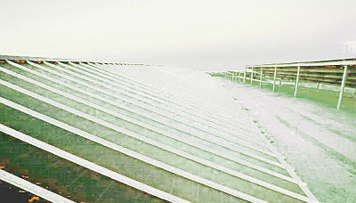
–Tomá, a ver si te despabilás –le dijo.
–¡Gracias! ¿Por qué no me despertaste antes?
–Porque parecías dormir muy cómodo.
–Te podría haber ayudado a juntar todo.
–No importa, lo hice enseguida.
Ambos cortaron la conversación cuando escucharon que los acoples magnéticos se desenganchaban y se prepararon para el viaje de descenso.
Por la ubicación elegida en el transbordador, podían observar el paisaje a través de un ventanal mientras descendían. Bruno le señaló unas construcciones casi cúbicas de color oscuro. Las cámaras de descompresión/compresión se elevaban por sobre la superficie de la Luna, espaciadas para dar lugar a los vehículos para maniobrar.
Eran prácticamente las únicas construcciones visibles, pues en el diseño original de Ciudad Luna todas las construcciones vitales fueron excavadas bajo la superficie por dos motivos: para protegerlas de los micrometeoritos, abundantes debido a la escasa atmósfera, y para encontrar mejores cimientos para construir, ya que las capas superiores eran demasiado blandas.
El otro panorama eran los colectores solares. Centenares de metros cuadrados de paneles solares, cubiertos con una capa protectora transparente curva que cumplía dos propósitos: proteger las celdas solares y enfocar los rayos que caían sobre el plástico en la menor superficie de la celda debajo. Como resultado, a vuelo de pájaro se veían como nubes semitransparentes con un fondo verde azulado. Hermoso.
Una vez en la superficie, buscaron una terminal pública y Bruno se comunicó con su hermano. Este trabajaría unas horas más, pero ellos podían ir a su departamento y esperarlo allí. Entonces salieron y tomaron el ascensor hasta el quinto subsuelo, y una vez allí, el tren eléctrico que los llevó varios kilómetros más al Norte.
Subieron dos pisos por ascensor y caminaron unos pocos metros hasta el departamento de Adrián Becker. Bruno puso el pulgar en la cerradura y entraron. El departamento no era muy pequeño: si bien sería difícil que convivieran más de tres personas, cuando Adrián estaba sólo debía sentirse completamente a sus anchas.
Roxana decidió bañarse y Bruno, aburrido y sin ganas de ponerse a trabajar, comenzó a buscar ingredientes para preparar algo de comer. Luego fue su turno de tomar un baño, mientras se cocinaba la cena.
Trabajaron varias horas, incluso mientras comían, pero no adelantaron nada en la investigación. Estaban cansados y frustrados porque no se les ocurría como decidir en que zonas de la Luna buscar. Roxana se fue a dormir, pero él se quedó trabajando. Sentía que no iban por un buen camino en la búsqueda. Finalmente se quedó dormido en el sillón de la terminal de la computadora, profundamente y sin sueños.
Lo despertaron dos timbrazos.
«¿Quién puede ser?» pensó Bruno todavía dormido.
El control de la puerta emitió el leve ronroneo que anticipa su apertura. Ya completamente despierto y alerta gracias a la adrenalina en la sangre, Bruno pegó un salto y se escondió en un ángulo oscuro contra la pared. Se escuchó un leve chasquido de la puerta al abrirse y entró Adrián.
–¡Animal! ¡Me asustaste! –le gritó Bruno a su hermano y luego lo abrazó– ¿Cómo estás?
–¿Y cómo querés que entre? –se defendió Adrián–. Si hasta toqué timbre antes de entrar, por si estabas en un momento, ejem, comprometido... –terminó con una sonrisa sarcástica.
–¡Callate! Estaba durmiendo, ¡y sólo! –aclaró Bruno–. Roxana está usando tu cama.
Adrián se cambió la ropa por una bata plateada que estaba muy a la moda en la Luna y comenzó a calentar comida. Mientras tanto, Bruno le contaba su experiencia con cero, rápidamente y sin entrar en detalles.
–La cuestión es que no sólo vinimos a la Luna escapando de las amenazas, sino que estamos buscando unas cavernas muy antiguas –terminó de contarle–. ¿Podrás ayudarnos? Sé que tenés buenos amigos en el Instituto de Geología Lunar.
Adrián caminó hasta la mesa con el plato de comida en la mano y miró suspicazmente a su hermano.
–¿Qué pasa? –preguntó Bruno.
–Si no estoy en lo correcto, no me trates de loco –pidió Adrián sentándose–. Pero necesito que me digas la verdad. ¿Están buscando cavernas de una raza anterior a la humana, nativa de la Luna o Marte?
A Bruno le temblaron las piernas y se desplomó en la silla delante de su hermano.
–¿Cómo sabés eso?
–¿Puede ser que vos y yo seamos descendientes de esa raza? –arriesgó nuevamente Adrián.
Bruno estaba completamente desconcertado. No tenía idea de cómo Adrián tenía toda esa información. Quería preguntárselo, pero no sabía por donde empezar. Estaba anonadado.
Adrián terminó su comida viendo como Bruno se quedaba callado como un estúpido frente a él, se recostó en su silla y comenzó a beber despacio su café.
–¿Te acordás la tesis que hice cuando me gradué en Medicina? –preguntó Adrián.
–Claro que sí –contestó inmediatamente Bruno–. En Exobiología.
–Sí, en Exobiología. ¿Pero más específicamente? –preguntó nuevamente Adrián.
–No, la verdad que no –contestó apesadumbrado Bruno–. No me interesaba mucho ese tema.
Adrián sonrió.
–Toda la tesitura se basaba en tratar de probar un nuevo método que había inventado –explicó–. Este método servía para relacionar genéticamente dos seres vivos, uno descendiente del otro, pero con mucha diferencia generacional.
–¿Y funcionó? –preguntó Bruno.
–No, lamentablemente no –contestó Adrián–. Pero me aprobaron la tesis porque con esos experimentos pude demostrar que la única manera de relacionar ambos seres vivos era partiendo de huellas genéticas del ser más reciente.
–¿Del que desciende del otro?
–Exactamente. No te das una idea de la oportunidad que me brindaste cuando me enviaste esa cadena de genes –continuó exaltado Adrián–. Refloté las técnicas desarrolladas en mi tesis, las apliqué a esta cadena de genes y obtuve resultados que no existían en ningún lado. Comencé por la Base de Datos de la Academia de Ciencias, y al no encontrar nada allí fui bajando en tamaño e importancia de las bases.
–Incrementando la complejidad de la búsqueda.
–Claro. Pero finalmente encontré unos documentos muy oscuros sobre la calibración de unos espectrógrafos que hacían referencia a unas impurezas encontradas en hielos de la Luna y Marte. ¡Te podrás imaginar mi sorpresa cuando descubrí que estas impurezas coincidían perfectamente con los resultados de mi análisis!
–¿Y por qué no me dijiste nada de todo esto? –inquirió Bruno.
–Porque seguí haciendo pruebas –explicó Adrián–. Por ejemplo, busqué la cadena de genes en mi sangre y también la encontré en un porcentaje fuera de lo normal. Entonces, ¿de qué se trata todo esto?
Entonces Bruno comenzó a narrarle las aventuras que había vivido desde que había vuelto a Marte de sus vacaciones. En medio de la charla se despertó Roxana y se sumó a la historia luego de las presentaciones de rigor. Después de actualizar a Adrián, quiso que le contaran a ella todo lo que él había descubierto.
Durante la explicación, ella sorpresivamente agarró del brazo a Bruno, que estaba hablando, y lo interrumpió.
–¿Dónde dijiste que fueron encontrados los restos de las moléculas que coincidieron con tu análisis? –le preguntó a Adrián.
–En hielos de la Luna y Marte –contestó.
–¡Eso es! –exclamó Roxana con los ojos bien abiertos–. Cuando los sobrevivientes de la raza vinieron a la Luna, se ubicaron en un lugar donde pudieran obtener agua, ¡y eso tiene que ser en algunos de los yacimientos de hielo!
Accedieron a los archivos que habían encontrado de los peligros en las excavaciones y confirmaron que solamente dos de las excavaciones que se vieron amenazadas por las cavernas eran de minas de hielo.
Estaban exaltados, toda su búsqueda se limitaba a solamente dos puntos. Entonces Adrián se puso en contacto con un amigo que trabajaba en una aseguradora y que le debía un favor.
Los técnicos de la aseguradora seguían las excavaciones en las minas aseguradas, realizando un informe semanal sobre cualquier acontecimiento. Poco antes de asegurarla, realizaban un mapa ultrasónico, ya que el seguro perdía validez si se realizaban excavaciones en puntos fuera de los límites. A Adrián le costó convencer a su amigo, pero finalmente pudo sacarle una copia de los ecomapas de las dos minas en cuestión.
Al otro día recibieron los mapas y pudieron analizarlos. Notaron como sólo uno de ellos mostraba patrones geométricos en los colores que representaban profundidades. No estaban seguros de si habían acertado, pero creían que era su mejor opción. Decidieron explorar esas cavernas.
11. Alcance
Ganduxer caminaba por una pradera bien cuidada. El pasto cortado, los canteros con flores multicolores. A lo lejos, se veían hileras de árboles movidos por el viento. Más acá, en la misma dirección, una bandada de gorriones picoteaba semillas del pasto. Ganduxer abandonó el sendero demarcado por piedras blancas y caminó hacia los pájaros.
A pocos metros de ellos salió corriendo moviendo los brazos y disfrutó el ver que los gorriones levantaban vuelo asustados. Caminó hasta los árboles y se recostó contra uno de ellos. No recordaba haberse sentido tan libre y en paz desde que era un niño y su madrastra lo había llevado a la Reserva de Especies.
¡Un momento! Era en esa Reserva donde se encontraba ahora, aunque no creía que fuese un déjà vu porque no recordaba haber abandonado el sendero hacia los pájaros cuando era un niño. Era muy extraño...
Uno de los efectos colaterales del sueño inducido en los viajes de larga duración, hasta donde se habían estudiado inocuos, era que el cerebro tardaba mucho más tiempo de lo normal en pasar del estado de ensueño al de vigilia. Por lo tanto, el tiempo en el que los sueños son pseudocontrolados por el cerebro consciente es mayor. En algunas personas esto traía como consecuencia que podían disfrutar el proceso del despertar, pero en otros les producía sentirse perdidos, viviendo en un mundo absurdo. Hubieron casos de personas que despertaron aterradas y sin control de ellas mismas. Incluso uno en que el paciente pasó dos meses en coma hasta que pudieron hacerlo volver a la realidad, aunque esto nunca salió a la luz pública.
Cuando Ganduxer se dio cuenta de que estaba soñando, hizo un esfuerzo mental para despertarse. Abrió los ojos y volvió a la realidad.
Luego de que hizo el trámite de ingreso a la Luna, fue al contacto que le habían recomendado y compró una pistola de aguja, dos cargadores, una granada de gas somnífero y un dispositivo de seguridad personal por electroshock. Quería estar preparado para defenderse, ya que pretendía no matar gente de más. Había tomado demasiados riesgos en este trabajo y algunos cadáveres más de lo necesario incrementaría demasiado la posibilidad de error.
Fue al departamento que le habían alquilado, se duchó y durmió catorce horas seguidas. Aunque había dormido en el viaje, no hay nada como un colchón decente para poder descansar realmente los huesos.
Bruno Becker se había fastidiado. Tuvieron que ir a tres negocios diferentes. En los primeros tenían solamente GPSs. Adrián no dejaba de preguntarles a los vendedores para qué querían ellos GPSs en la Luna, al principio con gracia pero luego con enojo.
Finalmente encontraron un LPS, pero no consiguieron el modelo que permite cargársele un mapa; este sólo indicaba coordenadas y trayectoria. Sin embargo tenía una buena antena de recepción y podía recibir la señal de los satélites incluso ciento cincuenta metros bajo la superficie.
Volvieron al departamento de Adrián y armaron en un mismo plano los ecomapas de las cavernas, el mapa de la mina propiamente dicha, y cruzaron todo con una grilla indicando las coordenadas.
Comenzarían la búsqueda al día siguiente, aprovechando que era domingo y la mina se encontraría prácticamente desierta. Se tomaron el resto de la noche para descansar. Según calculaban, sería una larga caminata al otro día.
Cuando amaneció, fueron en tren subterráneo hasta la dársena de salida de la ciudad. Allí alquilaron un transporte para los tres. Era similar al boogie que habían usado en Marte, sólo que éste era más pesado, con ruedas más chicas y rígidas, y mucho más lento.
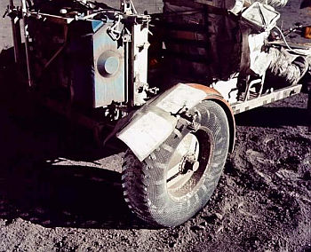
Sin embargo, el viaje hasta la entrada de la mina duró menos de cuarenta minutos. Recién cuando la compuerta de la cámara de compresión se cerró y se comenzó a escuchar el ruido del aire entrando al ambiente, Bruno recordó el peligro que llevaban a sus espaldas. La miró a Roxana justo cuando ella se volvía para mirarlo a él. Leyéndose los ojos, ambos se dieron cuenta que el otro presentía también el peligro. No sabían por qué en ese momento, ni por qué habían estado tranquilos antes, pero se sentían inseguros.
Bruno mostró el carnet de Inspector de Minas y el guardia los dejó pasar. Firmaron el registro de los trajes y se vistieron con ellos. Comenzaron a recorrer la mina, marcando su trayectoria según el LPS en el mapa que habían construido.
Ganduxer iba pensando cuán difícil era seguir y controlar una persona en las ciudades de la Luna cuando llegó al corredor de Adrián Becker. La razón era que en la zona de viviendas sólo había pasillos y puertas. En el nivel superior había plazas y centros recreativos, donde era fácil observar a alguien estando escondido. Pero en el nivel de las habitaciones se podía ver venir a alguien a veinte o treinta metros y no hay un sólo lugar para esconderse.
Se arriesgó entonces y llegó hasta la puerta del departamento de Adrián. Colocó un microcontacto entre la puerta y el marco, y dos microdetectores de movimiento, uno a cada lado de la entrada. Siendo cubos de menos de dos milímetros de arista, pasarían desapercibidos y le permitirían controlar por radio la actividad del departamento.
Fue luego al nivel superior, y esperó descansando en el banco de una plaza. Después de varias horas y algunas señales en falso, se activaron uno de los sensores de movimiento y el contacto de la puerta. Habían entrado.
Vigiló toda la noche. Comió en la plaza y desayunó en un local de frutas cercano. Siguió esperando. A media mañana, se activaron el contacto de la puerta y el sensor de movimiento de la derecha. Iban para el ascensor norte.
Ganduxer salió corriendo, subió por las escaleras hasta el piso superior –a decir verdad, el primer subsuelo–, para aprovechar que era una zona desierta por encontrarse allí el procesamiento de desperdicios. Pidió el ascensor, subió y cuando bajó medio nivel, forzó las puertas para abrirlas. Salió del ascensor por la parte superior de la puerta, entró al túnel del mismo ubicándose en el techo de la caja, y destrabó las puertas.
Inmediatamente el ascensor comenzó a bajar, y paró en el nivel de las habitaciones. Allí subieron Bruno, Adrián, y Roxana, quién indicó al ascensor que subían hasta la superficie. Iban hablando de la duración del viaje que iban a realizar.
Ganduxer sacó con cuidado una pequeña cajita que parecía contener polvo, aunque sus partículas eran más gruesas. Bien mirados eran como esa brillantina que en ocasiones se usa para maquillaje. Lo asombroso es que esas partículas no eran sino dispositivos para rastrear personas. Abrió la caja y fue dejando caer su contenido al tiempo que soplaba levemente para crear remolinos de aire.
El ascensor se detuvo y sus integrantes descendieron. Subió otra persona que fue hasta el nivel de los cultivos hidropónicos, y allí quedó libre. Entonces Ganduxer desmontó el sistema de iluminación y entró en la caja del ascensor. Volvió a colocar el plafón en su lugar y subió nuevamente hasta la superficie.
Una vez allí, lo primero que hizo fue buscar un lugar para esconderse por si sus futuras víctimas rondaban cerca. Se ocultó detrás de unos contenedores y prendió el visor del localizador. Tenía varios puntos estáticos a su izquierda y muchos moviéndose más adelante. Los estáticos eran los dispositivos que habían quedado en las paredes y el piso del ascensor. Se puso a seguir los puntos en movimiento, apurándose para recuperar terreno ya que estaba en el límite del alcance del localizador.
El destino de sus perseguidos parecía claro: el sector de alquiler de autos de superficie. Correspondía a lo que les había escuchado hablar en el ascensor. Había un descampado antes de este sector, lo que inhabilitaba a Ganduxer para seguirlos de cerca, pero escondiéndose en el límite podría ver si salían de allí.
Al minuto cambió de posición para poder ver a través de un ventanal y observó como Bruno hablaba con una persona del local y señalaba uno de los autos. Finalmente Adrián comenzó a subirse. Sin perder más tiempo, Ganduxer fue al local adyacente al de alquiler de autos, donde pudo alquilar un traje de superficie.
Salió a la superficie de la Luna y esperó. Minutos después se abrió el portón de la cámara de descompresión de autos y salió el vehículo que había elegido Bruno Becker. Ganduxer, oculto contra la pared, esperó a que el auto avanzara. Quería medir el alcance del localizador al aire libre, sin paredes ni techos que atenúen o reflejen las ondas. Notó con satisfacción que lograba rastrearlos a una distancia de alrededor de ochenta metros, noventa como máximo.
Ganduxer se fue ocultando entre las construcciones de descompresión/compresión, siguiendo con la vista al vehículo que rodeaba la periferia de las estructuras. Cuando llegó al límite notó que no podía seguir caminando sin correr demasiado riesgo de ser visto, pero el vehículo ya había estabilizado su dirección y si seguía en línea recta pasaría cerca de un cúmulo de colectores solares y de una mina de hielo.
El tiempo de viaje que él había escuchado cuando estaba escondido en el ascensor era demasiado para los paneles y muy poco para la mina. Cabía también la posibilidad de que fueran a la mina abandonada, muchos kilómetros más allá de la mina en servicio. En este caso, el tiempo que se había estimado no era el total, y tenía el problema de que no los podría seguir hasta este nuevo destino solamente caminando y saltando con el traje de superficie.
Minutos después el vehículo corrigió apenas su dirección, y separándose de los paneles, apuntó directamente a la mina de hielo activa. Entonces Ganduxer, en vez de seguir directamente al vehículo, se dirigió primero a su izquierda hasta que los paneles quedaron entre él y el vehículo, ocultándolo. Entonces fue hasta los paneles completamente seguro de no ser visto. En el trayecto, sin embargo, perdió terreno con el vehículo, quedando este fuera del alcance del localizador. Sin embargo los ubicó a simple vista y se aseguró que seguían dirigiéndose a la mina.
Ganduxer sabía que en baja gravedad no se puede correr. Se debe ir caminando tranquilo, o se debe ir saltando. Si no se tiene práctica, lo más seguro es que se intente caminar demasiado rápido y el único resultado es quedar flotando a una altura de medio metro, lo que demora muchísimo el andar, ya que en esa situación lo único que queda es esperar que la gravedad lo haga bajar.
Luego de superar los paneles y ya en viaje directamente hacia la mina, Ganduxer no se decidía en cómo ganar tiempo. No quería saltar, ya que si permanecía sobre la superficie siempre tendría los paneles a su espalda, lo que lo camuflaría. Si iba saltando, le ganaría terreno al vehículo, pero no quería arriesgarse a que lo viesen, y menos con la seguridad de saber que irían a la mina.
Allí tendría un inconveniente: sabía que no iba a poder ingresar por el portón principal, ya que no tenía los permisos adecuados. Pero no enfrentó el problema hasta que llegó allí: confiaba en que debía haber una entrada de emergencia por algún lado. Dio dos vueltas a toda la construcción hasta que la halló. Separó entonces la palanca de la pared y la giró tres vueltas enteras contra reloj. Abrió la pesada puerta y entró a la pequeña cámara.
Sabía que vendría un guardia de seguridad enseguida, por lo que luego de cerrar herméticamente la puerta, respiró profundamente, descargó los dos tanques de oxígeno en el pequeño ambiente y se sacó el casco. Segundos después, cuando la persona de seguridad se asomó por el vidrio de la esclusa, se puso las manos en el cuello en un gesto de desesperación. Cuando el guardia lo vio, presionó asustado el botón para abrir la esclusa.
Menos de veinte segundos después, el guardia yacía muerto con un agujero en el pecho provocado por la pistola de aguja y Ganduxer caminaba hacia la escalera más cercana.
12. Excavación
Habían tenido que caminar más de lo que esperaban, porque el mapa que habían conseguido de la mina no reflejaba fielmente el estado actual de la misma. Algunos pasos estaban clausurados y otros por lo visto nunca habían llegado a abrirse, lo que los obligó a realizar rodeos de hasta centenares de metros. Adrián estaba continuamente protestando, pero Bruno y Roxana disfrutaban el paseo.
Finalmente llegaron al punto donde teóricamente la distancia era mínima entre las excavaciones de la mina de hielo y las cavernas que ellos suponían que eran de sus ancestros.
–¡Acá! –exclamó Adrián–. Según el mapa y el LPS este sería el punto más cercano.
–Bien –dijo Roxana mirando a sus dos compañeros–. ¿Y ahora qué?
–Ahora hay que cavar para llegar a las cavernas –dijo Bruno y miró a su hermano– ¿Qué espesor de pared tenemos acá?
–Eso no es a lo que me refiero –interrumpió Roxana–. ¿Cómo se supone que vamos a abrirnos paso? No trajimos palas ni picos. Deberíamos pedir prestada alguna de las máquinas excavadoras que vimos en el otro túnel.
–Nos sería de mucha utilidad –aprobó Adrián– ¿Nos la robamos?
–Es sólo por unas horas –se justificó Roxana– ¡Vamos a buscar una!
Fueron ella y Bruno a buscar la máquina. Recién cuando llegaron, Roxana se dio cuenta de que había dos clases de máquinas distintas.
–¿Elegimos la grande? –le preguntó a Bruno.
–No nos conviene –contestó él–. El modelo más chico hace un túnel de poco más de medio metro de altura contra los dos metros de la grande, pero a una velocidad mucho mayor.
–Listo –contestó Roxana, subiéndose y buscando el encendido.
El modelo que decidieron usar era una especie de oruga de cuarenta centímetros de altura y más de un metro de largo, con sus dientes trituradores de piedra adelante, las tuberías para retirar el polvo y los cascotes al costado, y un pequeño asiento en la parte de atrás, desde donde se podía acceder a los controles de la excavadora.
Roxana la condujo hasta el punto que creían conveniente para empezar a excavar y la puso a trabajar. La roca de la pared iba cediendo más fácilmente de lo que habían imaginado. No es que tuvieran mucha experiencia en la excavación de túneles subterráneos en la Luna, pero pensaron que sería más difícil.
La máquina excavadora, si bien avanzaba lento, no parecía tener problemas con su trabajo. Quizás el único inconveniente era el polvo, que debido a la baja gravedad salía de las tuberías como la cola de un cometa. Poco más de una hora después, la máquina había desaparecido por completo en su propio túnel.
Aunque todo el proceso era bastante lento y aburrido, Bruno no despegaba la vista de la pantalla de video del mando a distancia. La cámara que estaba justo detrás de las brocas, en un ángulo en que el polvo no la afectaba por absorberlo la misma máquina para lanzarlo por detrás, era el único modo de observar el proceso. De otra manera, lo único que se podía observar era un agujero en la pared que escupía piedras, cascotes y mucho, mucho polvo.
–¡Vengan un minuto! –exclamó Bruno, que continuaba observando la pantalla del control a distancia–. Pasa algo raro.
–¿Ven? ¡La pared está cambiando de color! –continuó con sus compañeros también observando la pantalla.
–Es verdad –afirmó Adrián–. Fíjense como del gris pardusco original va cambiando lentamente a un material rojizo.
Quince minutos después, el polvo que salía de la boca del túnel era completamente rojo.
–¡Mierda! –exclamó Bruno, que seguía en los controles. Roxana y Adrián se acercaron.
–La velocidad de avance disminuyó en casi un cuarenta por ciento –dijo señalando un gráfico en una esquina de la pantalla. Manejó los controles y continuó: –Fíjense como se disparó para arriba la curva de resistencia del material.
–Ahora entiendo la vibración que sentimos –dijo Roxana–. A la excavadora le está costando penetrar este nuevo tipo de pared.
–¿Podrá terminar de perforar el túnel? –preguntó Adrián
–Esperemos que sí –contestó Bruno con cara de poca esperanza.
Sin embargo, la máquina siguió adelante y tras comer medio metro más de pared, el material volvió a su color original, pero no tan blando como el inicial. Los tres estaban fastidiados y aburridos.
Al principio, Bruno había estado siempre en los controles, pero luego fue alternando con sus compañeros. Sin embargo, cuando Adrián pudo calcular con más detalle la distancia que teóricamente había que salvar, y con esa base calcularon que faltarían otras tres horas, todo el asunto de la excavación perdió la diversión original.
Dos horas después, Bruno y Roxana estaban dormitando, apoyados contra la pared. Adrián había ido a un puesto de control cercano a buscar tres tubos más de oxígeno, ya que calculaban que no les alcanzarían los del traje para toda la expedición. Cuando volvió, notó que el polvo había dejado de salir del túnel.
En el panel de control titilaba una luz: la máquina había dejado de excavar porque la curva de resistencia de la pared había bajado demasiado abruptamente. En la pantalla de video, sin embargo, no se veía nada fuera de lo común. Es decir, sólo aparecía una pared de roca. Pero cuando Adrián despertó al resto y comenzaron a avanzar con la máquina puesta en modo manual, vieron que la pared comenzaba a desaparecer y que la excavadora ingresaba en una oscuridad inmensa, donde sus luces, de corto alcance, no lograban iluminar absolutamente nada.
Ganduxer bajó las escaleras y entró en el almacén de trajes, ya que quería cambiar su traje de superficie por uno de interiores, que eran más cómodos y livianos. Eligió uno de su talle y se lo puso. El almacén, un vestuario, y una pequeña zona de descompresión eran la única zona del primer subsuelo con aire respirable. Fue hasta la cámara de descompresión, y mientras escuchaba el siseo del aire al salir de la cabina, encendió el localizador.
No vio nada. Ejecutó la autocomprobación del equipo y confirmó su correcto funcionamiento. Nada. Ni rastros de sus perseguidos. ¿Cómo los encontraría? Recorrió varios túneles, bajó, subió y volvió a bajar varias veces.
Se llenó de esperanza cuando encontró por casualidad la terminal de vagones. Programó el localizador en modo grabación, y los puso en distintos vehículos e hizo que estos cumplan con todo el recorrido. No registró nada. En ninguno de los siete caminos que se podían controlar desde allí.
Estuvo así casi dos horas, y finalmente decidió que lo mejor sería esperarlos en la zona de atmósfera controlada, ya que ellos en algún momento tendrían que volver. Anduvo perdido varios minutos hasta que encontró uno de los túneles principales. Lo recorrió hasta el origen y llegó a la cámara de compresión.
Entró, apretó el botón de inicio, esperó, y cuando se prendió la luz verde abrió la puerta e ingresó al vestuario. Se sacó el traje, dejándolo tirado sobre uno de los bancos y buscó un buen lugar para esconderse y esperarlos.
Había tres lugares desde dónde podría ver si querían salir. Tanto la plataforma donde estaban estacionados los vehículos como una escalera que daba a un entrepiso eran peligrosas, ya que quedaba demasiado expuesto. Había una oficina desde dónde se veía el portón de entrada a través de un vidrio. Supuso que era el mejor lugar, ya que con un disparo rompería el vidrio y tendría un blanco fácil para los otros intentos. Entró en la oficina.
Lo que vio lo hizo sentirse un estúpido.
¿Cómo no lo había pensado antes? ¿Cómo no se le había ocurrido? Muchas veces en tantos años había estado en situaciones similares y varias veces lo había aprovechado. Supuso que ni lo pensó por tratar de encontrarlos con el localizador, ¡pero no debería haber dejado pasar algo tan obvio!
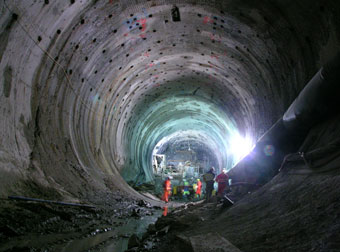
Sobre una de las paredes había filas de monitores apagados. Por el resto del equipo en esa pared, saltaba a la vista que era un sistema de cámaras de seguridad. Fue a prender el equipo, pero se dio cuenta en el momento justo que la llave de encendido sensaría su huella digital, y no sólo no prendería el equipo, sino que quedaría registrada su identidad tras el asesinato del guardia. ¡Eso era! ¡El guardia!
Fue hasta la entrada de emergencia, donde el cadáver seguía en el mismo lugar que él lo había dejado, tendido sobre un charco de sangre. Sacó su navaja y le cortó el dedo pulgar derecho a la altura de la articulación con la palma de la mano. Volvió a la oficina de vigilancia y puso el pulgar del guardia sobre la llave. Estuvo varios segundos intentando, ya que el deterioro que había sufrido el dedo complicaba un poco la situación, pero lo logró. Cuando se prendieron todos los monitores simultáneamente, en su cara se dibujó una sonrisa.
Se sentó a la consola. Había usado equipos similares en otras oportunidades y encontró enseguida la palanca para controlar la posición y zoom de las cámaras. Tardó unos instantes más en descubrir como utilizar esa única palanca para manejar la cámara que necesitaba.
En menos de un minuto tenía el equipo funcionando y dos minutos más tarde los había encontrado. Subsuelo 7, sector G4, en uno de los bordes de toda la excavación de la mina, según un mapa que se veía en una de las paredes de la oficina de vigilancia.
La cámara enfocaba un pasillo todo a lo largo. Cerca, casi bajo la cámara, había dos trajes apoyados sobre la pared. Si las personas dentro estaban dormidas o muertas, debía comprobarlo. ¿Y el tercer sujeto? Más allá se veía un agujero en la pared. Por el polvo recién depositado, ellos lo habían excavado.
Estaba excitadísimo. ¡Los había encontrado! Salió corriendo, se vistió en un instante con el traje blanco que había dejado sobre el banco del vestuario y fue comprobando los cierres herméticos en el camino a la cámara de descompresión.
Estaba tan acelerado, que la luz de control de sistemas vitales del traje pasó de verde a amarilla por la velocidad de las pulsaciones. Estaba tan acelerado, que intentó abrir dos veces la puerta de la cámara de descompresión antes de que terminara el proceso de extracción del aire, obteniendo como respuesta un timbrazo de negación. Estaba tan acelerado, que olvidó controlar la cantidad de oxígeno en los tanques del traje.
13. Descenso
Primero entró Bruno, lo siguió Roxana y cerrando la retaguardia Adrián. Iban gateando, separados entre sí por menos de un metro. Aunque el tamaño del túnel les permitía gatear con comodidad, no era lo suficientemente grande como para caminar parados.
Cuando Bruno llegó a la boca de salida del túnel, primero iluminó con su linterna, pero el haz de luz se perdía en el vacío. Finalmente salió del túnel. Por la curvatura de las paredes, estaba en el borde de una estructura semiesférica igual a las de Marte. Con la linterna podía ver solamente parte del piso y las paredes y techo que se curvaban alejándose de él.
–Pueden terminar de salir –les dijo a sus compañeros–. No hay nada raro.
–No se puede ver nada –comentó Adrián una vez afuera.
–Lástima que no tenemos bengalas como las que usamos en Marte –le dijo Roxana a Bruno.
–La caverna en la que estamos no es muy grande –comentó Adrián estudiando el mapa de su terminal portátil–. No creo que nos perdamos.
–Yo tampoco –afirmó Bruno–. Pero igualmente me parece prudente no perder contacto visual, por lo menos al principio.
Adrián se quedó parado a pocos pasos del túnel e iluminó a Roxana y Bruno que se alejaban. Si en algún momento dejaba de ver los focos de las linternas de sus amigos, les avisaría para que no vayan más allá.
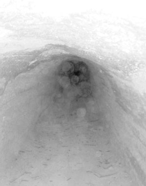
Ellos, a su vez, caminaban despacio e iluminando el piso a su alrededor. No querían llevarse una sorpresa con un pozo u otro obstáculo peligroso. El piso era la única referencia que tenían, ya que el techo no era alcanzado por las luces al elevarse demasiado por sobre sus cabezas.
Finalmente alcanzaron el otro punto de la pared sin novedad alguna. Entonces se dividieron y volvieron hacia Adrián, pero recorriendo el camino pegados a la pared, uno de cada lado. Bruno no encontró nada, pero Roxana a medio camino exclamó alegremente que había encontrado la boca de otro túnel. Ya más confiados, luego de reunirse recorrieron por separados la totalidad del piso de la caverna.
–Parece que la única salida de la caverna es ese túnel –dijo Bruno señalando la abertura encontrada por Roxana– ¿Qué indica el mapa?
Adrián utilizó su terminal y respondió: –Parece ser la única salida excavada. Teóricamente hay otras cavernas cerca pero deberíamos seguir comiendo roca. El problema es que no sabemos a donde conduce este túnel, ya que desaparece del mapa, supongo que porque sigue bajando y los ecomapas representan hasta una profundidad límite.
–Yo pienso que si sigue bajando, no debe llevarnos muy lejos de lo que buscamos –opinó Roxana con una sonrisa.
Antes de continuar, decidieron cambiar los tanques de oxígeno por los nuevos que había traído Adrián, ya que los otros estaban casi vacíos. Una vez asegurados que el gas ingresaba correctamente en el circuito de regulación de presión del traje, decidieron abandonar la caverna.
El túnel, a diferencia de los encontrados en Marte, no tenía un perfil semicircular, sino que era rectangular. Aunque era de alrededor de tres metros de altura y en esta oportunidad podían ir cómodamente caminando parados, sólo tenía medio metro de ancho, lo que los obligaba a ir en fila india. Realmente les intrigaba la razón de que todos los túneles fuesen de formas y tamaños variados, cuando teóricamente fueron fabricados por la misma gente.
Recorrieron casi tres kilómetros, y considerando que el piso iba en pendiente, calcularon que habían descendido alrededor de setecientos metros. Esto, sumado a la profundidad inicial del sector de la mina dónde habían entrado, daba un total aproximado de poco más de kilómetro y medio bajo la superficie lunar al momento de llegar a la salida del túnel.
Iban alertas, conscientes de que era un terreno completamente abierto a cualquier situación. Y estaban mentalizados con que habría cosas que los sorprendería y que debían mantenerse en sus cabales para poder reaccionar con la velocidad que la situación exigiese. Pero realmente no estaban preparados para lo que les sucedería. Jamás imaginarían algo como aquello.
Cinco segundos después de que el último de ellos saliera del túnel, y mientras todavía dudaban en la boca del mismo sobre como encarar esta exploración, el vacío estalló en luz. Todo a su alrededor se inundó de una potente luz blanco azulada, que los encandiló y cegó por más de un minuto.
Cuando Ganduxer llegó al pasillo donde comenzaba el túnel, los trajes que había visto por el monitor de seguridad no estaban. En su lugar había dos siluetas marcadas por el polvo que se había depositado a su alrededor. Marcadas en el polvo también, halló pisadas entrando en el túnel.
No había traído linterna, por lo que sólo tenía las luces incorporadas al costado del casco. Comprobó su correcto funcionamiento e ingresó en el túnel. Despacio y con extremada precaución, recorrió agachado el túnel hasta que llegó a la primer caverna. Antes de salir, mediante el localizador supo que ninguno de sus perseguidos estaba cerca.
Una vez dentro, no supo que hacer, ya que la oscuridad era absoluta. Si se separaba de la pared más de tres metros, prácticamente la perdía de vista. Para colmo el material opaco con el que estaban construidas, al igual que el techo, no reflejaba nada de luz.
Se decidió por comenzar a recorrer la pared. Cuando encontró el túnel rectangular, su primer impulso fue ingresar, pero desconocía si había otras salidas. Estaba justamente explorando otras zonas de la caverna cuando, tan sorpresivamente que le hizo perder el control de si mismo y casi gritar, la boca del túnel se llenó de luz.
Era un rectángulo iluminado recortado contra la pared. La misma luz le permitió ver que no había otras salidas en la caverna, por lo que optó por ingresar allí para encontrar a los otros tres y terminar su trabajo.
14. ¿Respuestas?
La primera reacción de Roxana cuando se iluminó el salón fue gritar, pero su alarido se apagó en su garganta, quedando deslumbrada y tiesa. Bruno y Adrián cerraron los ojos instintivamente, cegándose momentáneamente porque no llegaron a hacerlo a tiempo. Bruno pensaba que había tanta luz que podría ver donde pisaba a través de sus párpados cerrados.
Luego de muchos segundos, la intensidad de la luz comenzó a decaer y finalmente se tornó soportable. Los tres se permitieron abrir los ojos y se deslumbraron nuevamente. Ahora no por la iluminación, sino por la maravilla a la que se enfrentaban.
Estaban en un salón rectangular de unos cuatro metros de alto, de alrededor de veinte de ancho e increíblemente largo. Tan largo que desde la entrada al salón no lograban ver su final. En el centro de la habitación había un bloque de piedra macizo de unos diez metros de ancho y más de un metro de altura, que seguía a lo largo de todo el salón hasta dónde ellos podían ver.
Pero lo verdaderamente maravilloso eran los grabados. En filas de casi tres centímetros de altura, pequeños pero enormemente detallados, había cientos de figuras similares a las que habían encontrado en Marte. ¿Cientos? Considerando que cubrían todas las paredes del salón, así como también las paredes y parte superior de la estructura del interior del salón, se deberían poder contar millones de estos símbolos.
En parte, la magnificencia del escenario se debía a la iluminación. La luz que iluminaba perfectamente todos los detalles parecía provenir de... ¡ninguna parte! Era como si saliera de todos lados simultáneamente. El hecho de que ninguno de ellos tres produjesen sombras sobre los grabados, lo que le daba al escenario un efecto sobrenatural, los llevaba a pensar que la iluminación provenía de las mismas paredes. La luz impactaba en toda la superficie de los trajes, resaltando las zonas blancas sobre las naranjas.
–¡Es fantástico! –no paraba de repetir Roxana.
–Sencillamente impresionante –fue lo único que logró decir Bruno. Adrián callaba.
Pasó más de un cuarto de hora hasta que pudieron enfocar la vista en algo, sus cerebros dejaron de absorber cada una de estas maravillas, y recuperaron el control de sus cuerpos.
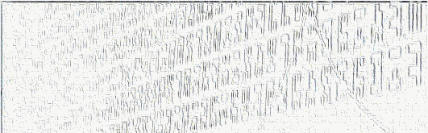
–¡Es increíble! –dijo finalmente Adrián–. ¿Ustedes saben leer estos dibujos?
–Saber leerlos como para poder traducirlos ahora, no –contestó Bruno.
–Pero podemos llegar a entenderlos tomando como base lo aprendido en Marte –agregó Roxana.
–Sin llegar a una traducción formal –insistió Adrián–, ¿a ustedes que les parece que dice?
–Realmente no tengo idea, estoy adivinando –dijo Bruno–. Pero supongo que por la cantidad de información que hay acá, debe ser toda la historia de la Raza.
–Sería fantástico –dijo Adrián, acercándose a los grabados.
Los tres comenzaron a recorrer las paredes, sintiendo los grabados hechos en bajorrelieve directamente en la roca de la pared.
–Deberíamos comenzar a videograbar enseguida –le comentó Roxana a Bruno–. Vamos a estar un buen rato y ya estamos usando los tanques de repuesto.
Adrián comenzó tratando de apreciar alguna diferencia entre los grabados de la parte superior del bloque central y sus paredes, mientras sus dos compañeros optaron por preparar los equipos de videograbación.
Ganduxer caminaba velozmente por el túnel. Lo complicaba la pendiente, pero al tenerlo completamente iluminado sabía que no tenía ningún obstáculo adelante.
Cuando llegó a la boca de salida del túnel, verificó en el localizador portátil las posiciones de sus futuras víctimas. En la pantalla había dos puntos de luz justo saliendo del túnel a la izquierda y uno más en línea recta pero bastante alejado.
Comenzó a cambiar entre las frecuencias de comunicaciones de los trajes y enseguida encontró la banda en la que estaban ellos. Escuchó a Bruno y Roxana discutir sobre que parte de la pared comenzar a grabar, y supuso que estaban lo suficientemente distraídos. Entró callado al salón. A Bruno y Roxana los tenía bastante cerca, pero Adrián estaba alejado.
–¡Al fin los tengo! –interrumpió Ganduxer la charla de los otros tres. Bruno reconoció la voz enseguida, y se dio vuelta despacio.
–Llegaste –le dijo a Ganduxer–. Te estábamos esperando.
–¿Esperando? –preguntó divertido él–. ¡Dejate de payasadas!
–No, es verdad –dijo ahora Roxana–. Presentíamos un peligro, pero no sabíamos de quién o dónde provenía.
–Suponíamos que eras vos, porque nadie más es tan estúpido como para demorar tanto –dijo Bruno desafiando a su enemigo.
–Son todas mentiras –contestó Ganduxer sosteniéndole la mirada–. Si me hubiesen esperado, no estarían indefensos.
–¿Y quién dijo que no estamos preparados para recibirte? –contestó Bruno con una sonrisa, mientras comenzaba lentamente a separarse de Roxana.
Ganduxer estaba bajo una gran tensión, vigilando los dos frentes. Bruno y Roxana por un lado y Adrián, que intentaba alejarse más, por el otro. Estaba decidiendo cuál era la acción menos arriesgada, si matar a los dos que estaban cerca, pero aparentemente desarmados, o dispararle primero a Adrián, de quien no sabía si portaba alguna clase de arma.
Estaba por decidirse cuando él mismo fue sorprendido por un ruido proveniente del interior de su propio traje: la alarma de capacidad del tanque de oxígeno. Ese instante de confusión fue aprovechado por Bruno, que saltando e impulsándose nuevamente contra el techo, se abalanzó sobre Ganduxer.
Este, sorprendido, apenas logró reaccionar y disparar. Sin embargo, su disparo tuvo blanco en Bruno. La aguja ingresó a su muñeca derecha, atravesando el traje, y explotó allí. El traje, al notar una pérdida de la presión interna de aire, cerró la manga contra el brazo a la altura del codo. La misma fuerza del traje le cortaba la circulación, lo que evitaba que se desangrase debido a la baja presión atmosférica de la Luna y protegía su piel del frío.
Bruno quedó más aturdido por el ruido de la explosión que por el dolor de su muñeca destrozada. Observaba incrédulo su mano separarse flotando de su brazo, mientras sin poder prestar atención, veía la danza de lucecitas amarillas y rojas de los signos vitales propios medidos por el traje.
Ganduxer, que había saltado atrás en el momento de disparar, chocó contra la pared. Sin embargo se recuperó mucho más rápido que Bruno. Pensaba en la manera de matarlo sin afectar el tanque de oxígeno para poder utilizarlo él, mientras se incorporaba y se disponía a disparar.
En ese instante una figura negra se deslizó desde el túnel de entrada del salón y golpeó a Ganduxer en el costado, ocasionando que soltara la pistola de aguja.
Ganduxer, aturdido y sorprendido, giró en el aire, todavía flotando hacia la otra pared, para ver quien lo había chocado. Alcanzó a ver un traje negro flotando hacia la parte superior de la estructura central de la habitación, cuando ingresó una figura gris acompañada de otro traje negro que se abalanzó sobre él.
La figura negra se hizo una especie de ovillo en el aire y rotó, de manera que cuando llegó a Ganduxer, puso sus pies sobre el pecho de este y se impulsó extendiéndose totalmente. La figura negra cruzó todo el ancho de la caverna, pero Ganduxer, que estaba cerca de la pared, chocó fuertemente con esta, quedando aturdido aún después de que la otra figura negra, la primera que lo había embestido, terminara de registrarlo en búsqueda de más armas. Lo terminó de despertar la alarma del traje, que con un sonido más urgente que antes le avisaba que le quedaban dos minutos de oxígeno.
Mientras tanto, Adrián se acercaba lo más rápido que podía, impulsándose alternativamente entre el techo y el bloque central, para socorrer a Bruno. Roxana, shockeada y sin entender totalmente lo que pasaba, no se movía. Cuando Adrián alcanzó a Bruno, verificó en el manómetro que no hubiese pérdidas de oxígeno.
La figura gris habló por el canal de emergencias, de manera de que todos lo escucharan: –Bruno, ¿estás bien?
Aunque lo había escuchado una sola vez en su vida, Ganduxer lo reconoció de inmediato, no tanto por su voz sino por la autoridad que transmitía.
–¡El Viejo! –exclamó sorprendido.
15. Máscara
–¿Mario? –preguntó Roxana cuando recuperó el habla–. ¿Sos vos?
El hombre de gris, desoyendo la pregunta, se dirigió a Ganduxer.
–¡Maldito estúpido! –le dijo–. Te ordené que no te metieras en mis planes. ¡Casi arruinás todo!
–¡Pero si usted me contrató para vigilarlos! –arremetió Ganduxer–. ¿Por qué cambia ahora de bando?
–Tu función era la de ayudar a girar la rueda, espolear a Bruno para orientarlo en su búsqueda y que produzca resultados –siguió diciéndole en la calma más absoluta–. En todo momento se te prohibió cualquier acción que comprometiera la salud de ellos –terminó el hombre de gris, señalando con la cabeza a Bruno y Roxana.
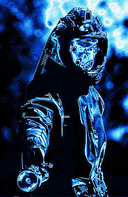
–Sin embargo me contrataron de su Organización para matarlos –dijo Ganduxer.
–Yo te dije personalmente que tu trabajo había terminado –explicó–. La persona que te recontrató no formaba parte de la Organización. Y ahora no forma parte de los seres vivos.
–¿Puedo preguntar quién es usted, que parece manejar nuestras vidas? –quiso saber Adrián mientras programaba el traje de su hermano para un mejor cuidado del brazo dañado.
–Es el Viejo Mario –contestó Roxana–. Un amigo de mi padre.
La terminación de la frase coincidió con la última e insistente alarma del traje de Ganduxer. Un bip por segundo, los últimos veinte segundos de oxígeno puro. En ese instante Ganduxer terminó de comprender lo definitivo de su posición, y tomando desprevenido a la figura negra que lo custodiaba, se lanzó en dirección a las conexiones de los tubos de oxígeno del Viejo Mario.
En un traje moderno, la siempre vigente necesidad de cambiar los tubos de oxígeno, había dejado un punto débil en su construcción. A este punto débil se lanzó Ganduxer, no con la idea de robar oxígeno para uso propio, ya que sabía que no tendría el tiempo necesario, sino con el objetivo de arrastrar al Viejo Mario con él a la muerte.
Sin embargo, no había tomado en cuenta la posición del otro guardaespaldas, que se lanzó a interceptarlo, y antes de que Ganduxer llegara al Viejo Mario, lo agarró por la espalda, y rotando sobre el centro de masa común, lanzó a Ganduxer para el fondo del salón, justo en el momento en que dejaba de sonar la alarma del traje, lo que le daba otro medio minuto para quedarse dormido por respirar aire viciado.
Bruno sabía que Ganduxer no duraría vivo más de un minuto, y era consciente de que se alegraba por ello. Lo que no podía entender era si ese sentimiento nacía de la cantidad de veces que Ganduxer había puesto en peligro su vida, o que esto significaba que había estado en peligro la misión que perseguía. Explicitar en su mente este razonamiento hizo que se sorprendiese y que de alguna manera pudiese explicar su actitud en las últimas semanas.
Le había dado más importancia a la tarea de desentrañar este misterio, que a su propia vida. De alguna manera, había demostrado que el instinto de supervivencia de su raza era más fuerte que el de su persona.
16. Oportunidad
Bruno Becker despertó en la cama de un lugar limpio, aséptico, olía como un hospital. Aunque pensó que había abierto los ojos, aún tenía los párpados cerrados, y sólo veía manchones de luz. Segundos después pudo finalmente abrirlos viendo una potente luz sobre él.
Durante un larguísimo instante, creyó que estaba en la morgue donde trabajaba Fabián Di Francesco y que todo había sido sólo un sueño.
Volvió a la realidad cuando el Viejo Mario se asomó a su campo visual.
–¿Estás bien? ¿Cómo te sentís?
–Perdido. ¿Dónde estamos? ¿Qué pasó? –preguntó Bruno.
–En el Hospital Central. Te trajimos enseguida de que te desmayaste y los doctores pudieron salvarte el brazo –contestó el Viejo Mario. Bruno levantó su brazo derecho y lo vio vendado desde el codo para abajo.
–No siento nada en el brazo –dijo alarmado.
–Porque está con anestesia local –contestó el Viejo Mario–. Te implantaron una mano biomecánica. Pero basta de preguntas, tenés que descansar.
Dicho esto se fue y Bruno, atiborrado de calmantes, volvió a dormirse.
Horas después volvió a despertar, sintiéndose mucho mejor. Esta vez estaban al costado de su cama Adrián y Roxana. Bruno se incorporó sobre el respaldo de la cama, haciendo fuerza con su brazo sano.
–Tengo hambre –dijo provocando las risas de sus compañeros–. ¿Cuánto hace que estoy durmiendo?
–Ingresaste al hospital hace cuatro días –le explicó Roxana–. ¡Y por lo visto ya estás completamente recuperado!
–¿Qué pasó con Ganduxer? –quiso saber Bruno–. ¿Y con la caverna que descubrimos?
–Ganduxer murió asfixiado –le contestó Roxana sin rastros de emoción en su rostro–. A la caverna la está videograbando la gente de Mario. ¿Sabés qué? Va a montar un centro de investigación en Marte, ¡conmigo a cargo del departamento de Traducciones!
–¡Fantástico! –contestó Bruno y se quedó callado.
Aunque se sentía bien, estaba cansado, física y emocionalmente. Ahora que había terminado su búsqueda, se podía permitir descansar. Se recostó acomodándose en los almohadones e inmediatamente se quedó dormido. Durmió casi diez horas, y cuando despertó estaba lleno de energía.
–¡Bueno, bueno! –dijo Roxana viendo que se incorporaba en la cama–. ¡Qué manera de dormir! ¿Cómo te sentís?
–¡Perfecto! Y con un hambre que me comería un caballo. ¿No le dan de comer a uno en este hospital?
No vinieron a servirle comida, sino a revisarle la mano implantada, la cual no había sufrido ni el más mínimo rechazo, ni siquiera en la zona más riesgosa donde se conectan los nervios con los sensores/estimuladores.
Cuando terminó el médico, sí le trajeron la comida. Una vez que finalizó de comer se recostó y le preguntó a Roxana:
–¿Encontramos lo que estábamos buscando?
–La verdad que no lo sé. ¿Qué estábamos buscando? –contestó ella–. Información para poder entender todos los grabados, ¿pero para qué?
–No sé –contestó ahora Bruno–. Supongo que para poder acelerar el proceso de evolución del ser humano o algo. ¿No se quería un renacer de la raza?
Adrián iba a acotar algo en el momento que el Viejo Mario carraspeó. Estaba acostado en un sillón de la habitación y parecía dormir, pero rápidamente se levantó y se acercó a la cama de Bruno, incorporándose al grupo.
–Lo que realmente queremos hacer –dijo cuando llegó a ellos– es poder revivir a las bacterias que están congeladas en hielos subterráneos de Marte.
–¿Cómo es eso? –preguntó Adrián.
–Empezaré por el principio –dijo el Viejo Mario–. En una época Marte tenía una atmósfera y agua líquida. Era un planeta con vida, incluso vida inteligente. ¿Por qué lo abandonaron?
–Según los documentos –contestó Roxana– tuvieron algún tipo de problema serio.
–No pudimos entender bien cual era la catástrofe –continuó Bruno–, pero ellos no la pudieron evitar y tuvieron que abandonar el planeta.
–El gran escollo que se les presentó –explicó el Viejo Mario– fue una glaciación. Por lo visto no tenían la tecnología para combatirla o convivir con ella.
–Nosotros pensamos que se habían ido por la falta de agua –dijo Bruno–. ¿Cómo te enteraste de todo esto?
–¿Falta de agua con todo el hielo que hay en Marte? –dijo el Viejo Mario con una sonrisa, y comenzó a contarles:
–Cuando comenzamos a cavar las primeras minas de hielo en Marte, en la misma época que iniciaron la construcción del primer domo, implementamos un protocolo de seguridad para mantener un absoluto secreto en el caso de que encontrásemos restos arqueológicos.
»Empezamos a extraer hielo en producción sin haber encontrado nada, pero en un trabajo de expansión hallamos la primer caverna. Estaba llena de grabados, y aunque en todos estos años no pudimos entender a ciencia cierta lo que decían, pudimos comprender muchos conceptos.
–Pero si ya tenían conocimiento del tema, ¿por qué no nos ayudaron? –interrumpió Bruno.
–Sí que los ayudamos, pero no en las traducciones –explicó el Viejo Mario–. Queríamos ver si llegaban a las mismas conclusiones que nosotros.
Y continuó:
–Un gran adelanto lo hicimos por accidente. Comenzamos a extraer hielo cerca de esta caverna, y algunas zonas tenían una coloración rojiza. Al principio pensamos que eran minerales disueltos en el agua congelada, pero cuando comenzamos los análisis de laboratorio de este hielo rojo, ¡descubrimos que contenían vida!
»Con este dato comprendimos gran parte de los grabados. La antigua raza, sabiendo que no saldría airosa contra la glaciación, comenzó a preservar formas de vida cuidadosamente preparadas en el mismo hielo que los mataría. También dejaron instrucciones para lograr descongelar estas bacterias y lograr que evolucionen.
»Sin embargo, todavía no logramos comprender el proceso adecuadamente, ya que en los experimentos que llevamos a cabo siempre se mueren en pocos días. Igualmente logramos deducir muchísima información valiosa, como la cadena de genes que hicimos llegar a sus manos.
–¿Pero entonces siempre estuvieron atrás de todo? –preguntó Adrián sorprendido.
–¡Por supuesto! –respondió el Viejo Mario alegremente–. Claro que ustedes vinieron a la Luna o fueron a Marte sin intervención de nadie, pero por los estudios que hicimos, sabíamos que las personas indicadas lo harían.
–¿Sabían que yo vendría a Marte? –preguntó Roxana.
–Descubrimos que estadísticamente las personas con alto porcentaje de la cadena de genes se dedicaban casi siempre a tareas relacionadas con la conquista del Espacio, ya sea en la Luna, en Marte, o incluso en la Tierra –contestó el Viejo Mario.
–Entonces, una vez que logremos entender completamente el lenguaje de los grabados –dijo Bruno–, ¿qué van a hacer?
El Viejo Mario suspiró y se sentó en la cama de Bruno.
–La Luna es un satélite estéril. Nos sirve como base de operaciones pero nada más. Por otro lado, y aunque todavía tengo la esperanza de que no sea así, a este ritmo la Tierra colapsará en doscientos o trescientos años.
»Marte es nuestra apuesta final –continúo–. Descongelando el hielo subterráneo podemos restaurar la atmósfera original. Y nuestra intención es devolverle al planeta sus formas de vida nativas.
»Según nuestros estudios podremos convivir con ellas. Sin embargo necesitamos dejar de lado todas nuestras tendencias autodestructivas. No todos los seres humanos están preparados para fundar una civilización diferente: una civilización que tenga como eje principal la integración con otras razas y el respeto por la naturaleza.
»Así y todo, notamos que la gente que viaja a otros planetas a desarrollar sus vidas tiene una clara orientación ecologista y amor por su nuevo hogar. Esto, sumado a que normalmente viajan herederos fuertes de la raza original del planeta, y que el mismo estará poblado por sus especies originales, nos dan la casi completa seguridad de que lograremos lo que queremos en Marte.
»Básicamente, nuestro objetivo final es darle a la Vida en este Sistema Solar una tercera oportunidad.
Fin
- - -
Hielo Rojo - Facundo Batista - Bitácora de Vuelo
Licencia: Atribución-No Comercial-Sin Obras Derivadas 2.5 Genérica
{kind=link}
{kind=link}
{kind=link}
{kind=link}